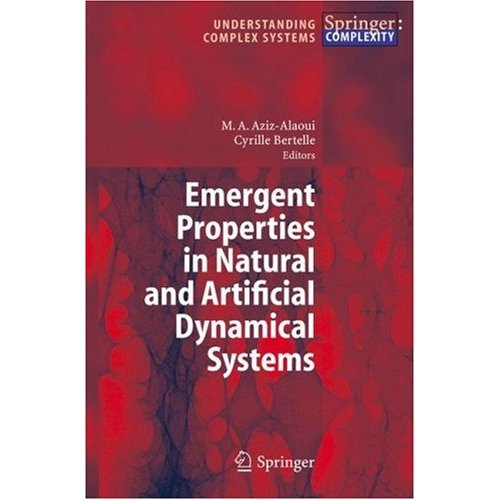
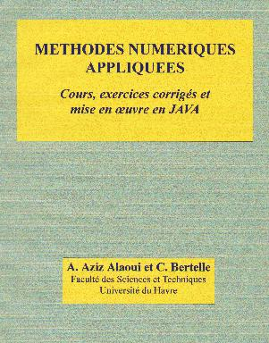
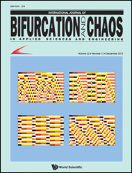
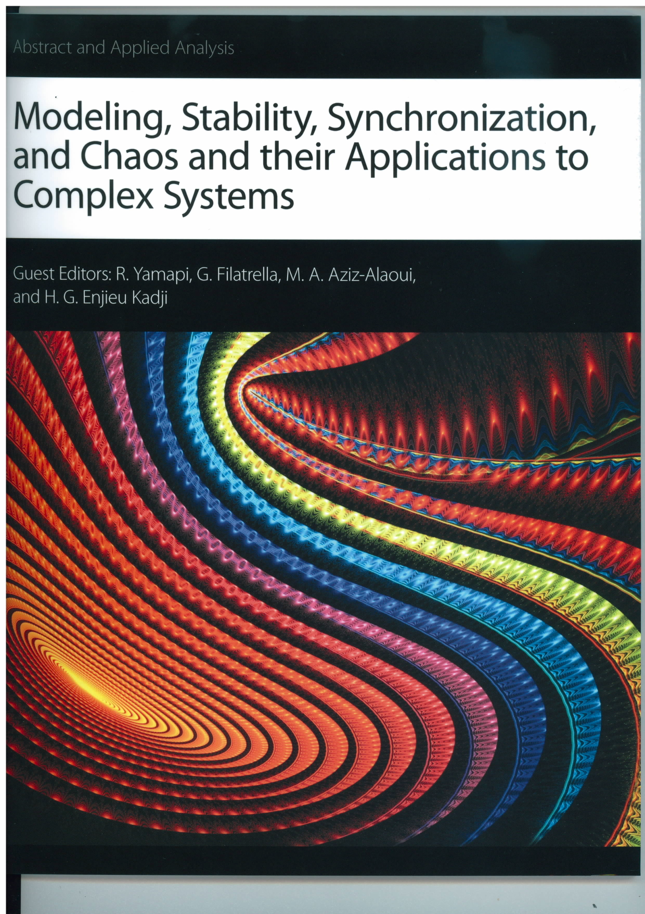
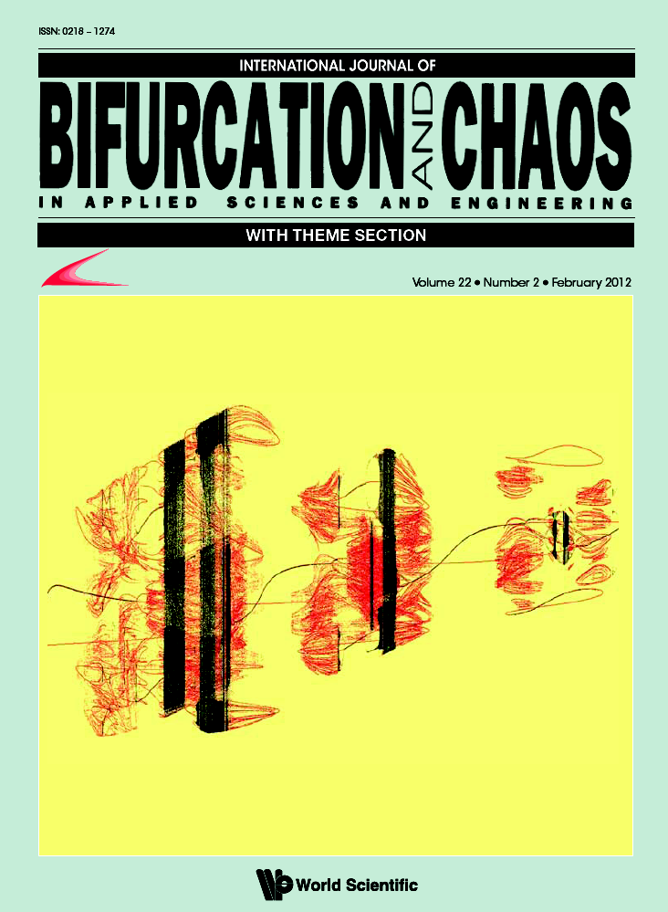

<!DOCTYPE html PUBLIC "-//W3C//DTD XHTML 1.0 Strict//EN" "DTD/xhtml1-strict.dtd">
<html>
<head>
<title>Page web de M.A. Aziz-Alaoui : 
Professeur de mathématiques, université du Havre, Normandie, France 
</title>	
		
	<meta http-equiv="Content-Type" content="text/html;charset=utf-8">
	<meta name="author" content="Aziz Alaoui" lang="fr">	
	<meta name="Keywords" content=" 
	Mathématiques Appliquées, Applications,
	Systèmes dynamiques, master recherche,  master math-info, 
	master math&eacute;matique-informatique,  
	formation bac+5, universit&eacute; du Havre , master syst&egrave;mes 
	complexes, syst&egrave;mes complexes, Chaos, chaotique, Bifurcations, 
	Synchronisation, contrôle, math-bio, eco bio-modelling, modélisation, 
	neuroscience, ecosystèmes,  EDO, EDP, EDR, Systèmes complexes,  réseaux complexes, 
	Réseaux d'interactions, Bio-complexité, Auto-organisation ,  Emergence" lang="fr"> 
	<meta name="Description" content="page web de Aziz Alaoui ">
	<meta name="generator" content="Bluefish 2.2.12beta1" >
	<meta name="Robots" content="all">
	<meta name="revisit-after" content="7 days">			
	<link href="aziz2012.css" rel="stylesheet" type="text/css">
        <script type="text/javascript" src="functions.js"></script>
</head>

<body>	

<div id="global">

<div id="top">
    <h1>
        M.A. Aziz-Alaoui<br> Professor Applied Mathematics,
University of LeHavre,   Normandie Université, France
    </h1>
    
</div>

  


<div id="center">
<div id="nav">


 
<ul id="menu">

<li class="menu" id="menu1"><a href="http://lmah.univ-lehavre.fr/~alaoui/">Home</a></li>

<li class="menu" id="menu2"><a href="http://lmah.univ-lehavre.fr/~alaoui/cv.html">Cv</a></li>

<li class="menu" id="menu3"><a href="#" jotId="wuid:gx:4ffe1adcc2478720" class="sites-navigation-link topLevel">Recherche</a>
		<ul class="sousmenu" id="sousmenu3">
			<li><a href="http://lmah.univ-lehavre.fr/~alaoui/publications.html">Publications</a></li> 
			<li><a href="http://lmah.univ-lehavre.fr/~alaoui/synthese_rech.html">Synthèse Recherche</a></li>
			 <li><a href="http://lmah.univ-lehavre.fr/~alaoui/cv.html#encadrement">Encadrement</a></li>
		   <li><a href="http://lmah.univ-lehavre.fr/~alaoui/cv.html#organisation">Colloques (co)organisés</a></li> 
		   <li><a href="http://lmah.univ-lehavre.fr/~alaoui/cv.html#cooperation">Coopérations</a></li>		   
         <li><a href="#Edited Proceedings"> Edited Proceedings</a></li>
    
			<li><a href="http://iscn.univ-lehavre.fr/">Iscn</a></li>
			<li><a href="http://litis.univ-lehavre.fr/risc/">Feder-Risc</a></li>  
			<li><a href="https://www.cs-dc.org/">Complex Systems Digital Campus Unesco</a></li>  
		 		
	      <li><a href="http://www.watam.org/JNSA/">J.N.S.A.</a></li>
			<li><a href="http://lmah.univ-lehavre.fr/~alaoui/sp_gallery_chua.html">MultiSpir.S.A</a></li>
			<li><a href="http://lmah.univ-lehavre.fr/~alaoui/az_hen_n.html">MultiFolds.S.A</a></li>
			<li><a href="http://lmah.univ-lehavre.fr/~alaoui/animation.html">Animated.S.A</a></li>
		</ul>
</li>


<li class="menu" id="menu4"><a href="http://lmah.univ-lehavre.fr/~alaoui/animation.html">Animation Attracteurs </a></li>


<li class="menu" id="menu5"><a href="http://lmah.univ-lehavre.fr/~formation/">Enseignement</a>
		<ul class="sousmenu" id="sousmenu5">
			<li><a href="http://lmah.univ-lehavre.fr/~formation/">Master</a></li>
			<li><a href="https://www.univ-lehavre.fr/spip.php?formation8">Licence</a></li>
			<li><a href="http://lmah.univ-lehavre.fr/~formation/Master2MASC.html">Emploi du temps</a></li>
		</ul>
</li>

<li class="menu" id="menu6"><a href="http://lmah.univ-lehavre.fr/~alaoui/">Liens Locaux</a>
		<ul class="sousmenu" id="sousmenu6">    	
			<li><a href="http://lmah.univ-lehavre.fr/">Labo.Math.Appli.Ulh</a></li>
			<li><a href="http://normandie.math.cnrs.fr/">Fnm: Fr-Cnrs-3335</a></li>
			<li><a href="http://isc-n.fr/">Iscn</a></li>
			<li><a href="http://www.grrhn.fr/">Grr-Hn</a></li>
			<li><a href="http://www.coria.fr/dycoec/"> Gdr-2489 Cnrs Dycoec</a></li>		
			<li><a href="http://lmah.univ-lehavre.fr/~alaoui/ds_conferences.html">Colloques</a></li>
			<li><a href="http://lmah.univ-lehavre.fr/~alaoui/revues_dyn_syst.html">Revues</a></li>
			<li><a href="http://lmah.univ-lehavre.fr/~alaoui/labo_nonlinear.html">Labos.S.D.</a></li>
			<li><a href="http://lmah.univ-lehavre.fr/~alaoui/fractal.html">Fractales</a></li>
			<li><a href="http://lmah.univ-lehavre.fr/~alaoui/chaotic_mappings_az.html">Chaotic Mappings</a></li>
			<li><a href="http://lmah.univ-lehavre.fr/~alaoui/wonder_math.html">Math.Ressouces</a></li>
			<li><a href="http://lmah.univ-lehavre.fr/~alaoui//utilitaires.html">Info.Ressources</a></li>
		</ul>
</li>


<li class="menu" id="menu7"><a href="http://lmah.univ-lehavre.fr/~alaoui/">Liens Extérieurs</a>
		<ul class="sousmenu" id="sousmenu7">

		
         <li class="sousmenu" id="sousmenu7"><a href="http://lmah.univ-lehavre.fr/~alaoui/">Ressources</a>
        	 <ul class="soussousmenu" id="soussousmenu7a">
					<li><a href="http://hal.archives-ouvertes.fr/">Hal Archives</a></li>
					<li><a href="http://arxiv.org/archive/math">arXiv preprint archive</a></li>
					<li><a href="http://www.ams.org/mathscinet/">MathSciNet</a></li>
					<li><a href="http://www.zentralblatt-math.org/zbmath//">Zentralblatt Math</a></li>					
					<li><a href="http://mathworld.wolfram.com/">Wolfram MathWorld</a></li>
					<li><a href="http://planetmath.org/">Planete Math</a></li>
					<li><a href="http://http://mpe2013.org/">Math of Planet Earth</a></li>
					<li><a href="http://www.encyclopediaofmath.org/index.php/Main_Page">Encyclopedia of math</a></li>	
         	 </ul>         
         </li> 		

  			<li class="sousmenu" id="sousmenu7"><a href="http://lmah.univ-lehavre.fr/~alaoui/">Sociétés, Agences, Instituts</a>
         		<ul class="soussousmenu" id="soussousmenu7b">
         		
         			<li><a href="http://isc-n.fr/">Iscn</a></li>
         			<li><a href="http://smai.emath.fr/">Smai</a></li>
					<li><a href="http://www.agence-maths-entreprises.fr/a/?q=fr/">Amies:Math-Entreprise-Soc</a></li>
					<li><a href="http://www-mathdoc.ujf-grenoble.fr/">Math.Doc</a></li>
          	</ul>         
         </li> 		

				<li class="sousmenu" id="sousmenu7"><a href="http://lmah.univ-lehavre.fr/~alaoui/">Passe-Temps ?</a>
         		<ul class="soussousmenu" id="soussousmenu7c">

         		 
          		<li><a href="http://phdtree.org/"> Academic-Genealogy-Wiki</a></li>	
         			<li><a href="http://www.whydomath.org/">WhyDoMath</a></li>	
					<li><a href="http://www.theoremoftheday.org">Theorem of the Day</a></li>					
					<li><a href="http://images.math.cnrs.fr/">Images.Des.Maths</a></li>
						 
					<li><a href="http://ta.twi.tudelft.nl/nw/users/vuik/wi211/disasters.html">Désastre.Erreurs.Num</a></li>	
					<li><a href="http://en.wikipedia.org/wiki/Category:Mathematics_paradoxes">Math-Paradoxes</a></li>
					<li><a href="http://en.wikipedia.org/wiki/Category:Paradoxes">Category-Paradoxes</a></li>	
					
					<li><a href="http://www-groups.dcs.st-and.ac.uk/history/">Mathématiciens.Célèbres</a></li>						
					<li><a href="http://en.wikipedia.org/wiki/Fields_Medal">Fields</a></li>					
					<li><a href="http://www.nobelprize.org/nobel_prizes/lists/all/">Nobel</a></li>
					<li><a href="http://en.wikipedia.org/wiki/Ig_nobel/">Ig Nobel</a></li>	
		 			<li><a href="http://lmah.univ-lehavre.fr/~alaoui/erdosNumber.html">Nombre.Erdos</a></li>

					<li><a href="http://www.phdcomics.com/">PhdComics</a></li>
					<li><a href="http://www.prestidigitascience.fr/">PrestidigitaScience</a></li>
					<li><a href="http://www.univ-rouen.fr/LMRS/Vulgarisation/index.html">Vulgarisation.Des.Maths(Lmrs)</a></li>
				
					<li><a href="http://thatsmathematics.com/mathgen/">WriteMathPaper</a></li>		
					
          	</ul>         
         </li> 		

					
		</ul>
</li>

<li class="menu" id="menu8"><a href="http://lmah.univ-lehavre.fr/~alaoui/">Autres Perso.</a>
		<ul class="sousmenu" id="sousmenu8">
		    <li><a href="http://lmah.univ-lehavre.fr/~alaoui/gallerie/gallerieZ.html">Photos Gallerie</a></li>
			 <li><a href="http://lmah.univ-lehavre.fr/~alaoui/hobbies.html">Hobbies</a></li>
			 <li><a href="http://lmah.univ-lehavre.fr/~alaoui/favorites_places.html">Lieux Favoris</a></li>
		</ul>
</li>

<li class="menu" id="menu9"><a href="http://www.univ-lehavre.fr">Univ.LeHavre</a></li>
<li class="menu" id="menu10"><a href="http://www.normandie-univ.fr/">Normandie-Univ.</a></li>
<li class="menu" id="menu11"><a href="http://www.watam.org/JNSA/"> J. NonLin.Syst.Appli</a></li>
<li class="menu" id="menu12"><a href="http://maps.google.com/maps/ms?hl=en&ie=UTF8&t=h&source=embed&msa=0&msid=111653321018646836785.0004668f73931912b83ce&ll=49.493288,0.12336&spn=0.01338,0.027466&z=15"> Location of My Univ.</a></li>


</ul> 
 
 
 
 
 
 
 
<h2>
     Coordonnées       
</h2>
 
<p>
  <b>Adresse : </b>
  M.A. Aziz Alaoui<br/> 
LMAH, 
FR-CNRS-3335,
Université du Havre,
25 Rue Ph. Lebon, BP:540, 
76058 Le Havre Cedex, (Normandie) France <br/>
  <b>Bureau  : </b> UFR-ST, aile G-102 <br/>
  <b>Tel:  </b>  +33 (0)2 35 21 72 13  <br/> 
  <b>Courriel : </b>
  <a href="mailto:aziz.alaoui@univ-lehavre.fr">aziz.alaoui@univ-lehavre.fr</a> <br/> 

 </p>
   <p><br>
   <br>
   </p>


</p>
<br/>
<h2>Responsabilités</h2>
<br/> 

<p> <b>- Référent Déontologue  (Ethics Officer) de l'Université du Havre Normandie
<p> <b>- ex Vice-Président Université du Havre Normandie, en charge des finances, numérique et pilotage
<p> <b>- ex Directeur </b> du Laboratoire LMAH
<p> <b>- ex Coordinateur</b> du Master Math-Info de l'ULHN
et <b>ex  Responsable</b> du  master Math
<br/> 
<p> <b>- ex Vice-Président de </b>  Normandie Université, octobre 2012 - août 2015
<p> <b>- ex Vice-Président</b> de l'université du Havre, Conseil Scientifique : 
Recherche-Valorisation-Etudes Doctorales,   2007-2012.
<br/> 

<p><b>
<CENTER>
</IMG>
</CENTER>

<br/>

</p>
<br/>
<br/>
</div>

				
<div id="content">		
<table cellspacing="5", cellpadding="5">

<tr valign="top" align="left">
    <td colspan="6" align="center">
      <h2>
          <FONT COLOR=white FONT SIZE=5>Publications, 
				Aziz-Alaoui M.A.    </FONT>
      </h2>
<p align="justify">

<p>
<br> <i><FONT COLOR=white> --- <b>
<span style="background:#B0C4DE">English</span>
</b></FONT> : </i>  --
My research consists of several themes, all complementary, mainly centered on the theory of real
<b>dissipative dynamical systems </b> (ordinary, delay or partial  differential equations, 
nonlinear dynamics, bifurcations, chaos and synchronization), and some of their applications,
(applications -which I've looked at- include
Ecosystems,
epidemiology systems,
neuroscience).
The main results concern the qualitative theory of differential equations
(ODE, PDE), they rely on different techniques ranging from theory to numerical simulations.

My scientific career, for a little more than ten years, has
naturally led me to get interested in the themes of <b>complex systems</b>, 
 <b>interaction networks</b> and <b>emerging properties</b>, particularly on issues relating to the life science (synchronization, 
 patterns, ...).
 
 <p>

<b> Keywords</b>:         
Dynamical systems, 
Nonlinear partial differential equations, 
Complex systems on networks, 
Qualitative theory, 
Bifurcations, 
Traveling waves,  
Synchronization, 
<b>Applications in neuroscience, ecosystems, epidemiology</b>. 

 </p>

<p>

<br>  <i> <FONT COLOR=white > --- <b>
<span style="background:#B0C4DE">French</span>
</b></FONT>  : </i> --
Mes activités de recherche  se composent de plusieurs thèmes,  tous complémentaires, 
car essentiellement centrés sur la théorie des <b>systèmes dynamiques dissipatifs réels</b> 
(équations différentielles ordinaires, à retard, ou aux dérivées partielles, dynamique 
non-linéaire, bifurcations, chaos et  synchronisation),  et certaines de leurs applications
(principalement, Ecosystèmes,
epidemiologie,
neuroscience).
Les principaux  résultats obtenus concernent la théorie qualitative des équations différentielles 
(EDO, EDP), ils s'appuient sur différentes techniques allant de la théorie et analyse mathématique, aux
simulations  numériques.  
Ma trajectoire scientifique, depuis quelques années maintenant,  
m'a naturellement conduit à m'intéresser aux thèmes des <b> systèmes complexes</b>, 
 <b>réseaux  d'interactions</b> et propriétés émergentes, particulièrement sur 
 des problèmes touchant aux modèles du vivant (synchronisation, patterns, ...).

<p>

<b>See my entries at:</b>

<br>  <i> <FONT COLOR=white> --- <b>  
<span style="background:#B0C4DE">Link to Google Scholar pages:</span> 
  </b></FONT>  : </i>  
<a href="http://scholar.google.fr/citations?hl=fr&user=DVdULsAAAAAJ"> 
http://scholar.google.fr/citations?hl=fr&user=DVdULsAAAAAJ</a>

<p>
<br>  <i> <FONT COLOR=white> --- <b>  
<span style="background:#B0C4DE">Link to Zentralblatt-Math  pages:</span> 
  </b></FONT>  : </i>  
<a href="https://zbmath.org/?q=ai:aziz-alaoui.m-a"> 
https://zbmath.org/?q=ai:aziz-alaoui.m-a</a>
</p>

<p>
<br>  <i> <FONT COLOR=white> --- <b>  
<span style="background:#B0C4DE">Link to Math-SciNet  pages:</span> 
  </b></FONT>  : </i>  
<a href="http://www.ams.org/mathscinet/search/author.html?mrauthid=652823"> 
http://www.ams.org/mathscinet/search/author.html?mrauthid=652823</a>
</p>


<p>
<br>  <i> <FONT COLOR=white> --- <b>  
<span style="background:#B0C4DE">Link to SCOPUS pages:</span> 
  </b></FONT>  : </i>  
<a href="https://www.scopus.com/authid/detail.uri?authorId=6602144033"> 
https://www.scopus.com/authid/detail.uri?authorId=6602144033</a>
</p>


<p>
<br>  <i> <FONT COLOR=white> --- <b>  
<span style="background:#B0C4DE">Link to ORCID</span> 
  </b></FONT>  : </i>  
<a href="https://orcid.org/0000-0001-5198-4597"> 
https://orcid.org/0000-0001-5198-4597</a>
</p>


<p>
<br>  <i> <FONT COLOR=white> --- <b>  
<span style="background:#B0C4DE">Link to SemanticScholar</span> 
  </b></FONT>  : </i>  
<a href="https://www.semanticscholar.org/author/M.-Aziz-Alaoui/1401696579"> 
https://www.semanticscholar.org/author/M.-Aziz-Alaoui/1401696579</a>
</p>


<p>
<br>  <i> <FONT COLOR=white> --- <b>  
<span style="background:#B0C4DE">Link to AD Scientific Index</span> 
  </b></FONT>  : </i>  
<a href="https://www.adscientificindex.com/scientist/aziz-alaoui-ma/1711263"> 
https://www.adscientificindex.com/scientist/aziz-alaoui-ma/1711263</a>
</p>


<p>
<br>  <i> <FONT COLOR=white> --- <b>  
<span style="background:#B0C4DE">Link to ResearcherID  pages:</span> 
  </b></FONT>  : </i>  
<a href="https://"> 
 </a>
</p>


</p>


       <p> </p>

 
      <h2>Headings: </h2>      
      <p align="justify">
      
 


<ul class="custom">
    <li><a href="#Books">  Edited Books (livres edités) </a></li>
    
    <li><a href="#Edited Special Issues"> Edited Journals Special Issues </a></li>
    
    <li><a href="#Edited Proceedings"> Edited Conferences Proceedings </a></li>
    
 	<li><a href="#Submitted"> Papers submitted to refereed Journals </a></li>

 	<li><a href="#Chapters"> Book chapters</a></li>
 	
 	<li><a href="#Vulgarisation">  	Publications Popularization of Science</a></li>
 
 	<li><a href="#Encyclopedia"> Publication in an Encyclopedia  </a></li>

 	<li><a href="#Others"> Other Publications (Autres) </a></li>
 	
 	<li><a href="#Articles"> ARTICLES in REFEREED JOURNALS </a></li> 
 
    <li><a href="#In Preparation"> Papers in preparation (or unpublished),  </a></li>

    <li><a href="#Internationales Conferences"> Proceedings & communications in international conferences</a></li>

    <li><a href="#National Conferences"> Proceedings & communications in National Conferences </a></li>

    <li><a href="#Teaching"> Publications Pédagogiques (Educational Publications in french)</a></li>

</ul>

    </td>
</tr>	


<tr valign="top" align="left">
    <td colspan="2" align="center">
     <span><a name="Books"></a> <FONT COLOR=white FONT SIZE=4> </FONT></span>
      <h2>  Books (Livres)</h2>      
      <p align="justify">

<p>
Causalité Fonctionnelle dans les Écosystèmes. 
Bi-stabilité, Irréversibilité, Espèces Invasives et Succession Écologique. 
Evariste Sanchez-Palencia, M.A. Aziz-Alaoui.  
2026. hal-05697128. 


    	<p>
	<i><a href="LivreSpringer2009.html"> 
	From System Complexity to Emergent Properties
	</a></i> 
  	(M.A Aziz-Alaoui and  C. Bertelle,   Eds),    Understanding Complex Systems. 
   	Springer-Verlag,   Heidelberg (2009),    <b>370</b> pages.
   	(see also <a href="http://www.springer.com/engineering/book/978-3-642-02198-5"> 
	here: http://www.springer.com/engineering/book/978-3-642-02198-5)
	  </a>
  
	<p>
	<i><a href="epnadsSpringer.html"> 
	Emergent Properties in Natural and Artificial Dynamical Systems
	</a></i> 
  	(M.A Aziz-Alaoui and  C. Bertelle,   Eds),    Understanding Complex Systems. 
   	Springer-Verlag,   Heidelberg (2006),   <b>280</b> p.
   	(see also <a href="http://www.springer.com/engineering/book/978-3-540-34822-1"> 
	here: http://www.springer.com/engineering/book/978-3-540-34822-1)
	  </a>
  
	<p> 
	<i>(forthcoming: in french) <a href="livre.html">
  	 Méthodes Numériques Appliquées,  
  	Cours,   Exercices Corrigés et Mise en oeuvre   
  	en JAVA</a></i>,   
	(M.A Aziz-Alaoui and  C. Bertelle),   <b>300</b> pages,   will be asap submitted.
		  </a>

      </p>
    </td>
 </tr>	


<tr valign="top" align="left">
    <td colspan="2" align="center">
      <span><a name="Edited Special Issues"></a> <FONT COLOR=white FONT SIZE=4> </FONT></span>
      <h2>Edited Journals Special Issues</h2>
      <p align="justify">
      
    <p> 
	<i><a href="http://www.worldscientific.com/toc/ijbc/25/07"> 
	International Journal of Bifurcation and Chaos</a></i>,  Vol.25(7), (2015),
	Special issue on
	Nonlinear Dynamics in Bio-Systems; 
	(Guest Editors: M. A. Aziz-Alaoui, Igor Belykh, Cyrille Bertelle, Luonan Chen & Tianshou Zhou, Eds),
	  </a>
      
	<p> 
	<i><a href="http://www.hindawi.com/journals/aaa/2014/953813/"> 
	Abstract and Applied Analysis</a></i>,   Vol.2014,	Special issue on
	 Modeling, Stability, Synchronization and Chaos and their Applications to Complex Systems,
  	(Yamapi R., Filatrella G., Aziz-Alaoui M.A.  and  EnjieuKadi H.  Eds),   
	  </a>
	    
    <p> 
	<i><a href="IJBC-Special-Issue2012.html"> 
	International Journal of Bifurcation and Chaos</a></i>,  Vol.22(2), (2012),
	Special issue on Complex Systems,
  	(Aziz-Alaoui M.A.,   Bertelle C. and  Liu X.,    Eds),<b> 15</b> articles, among them those of: Rossler O.,   Yorke J.,    Grebogi C.,   Auger A., Dmongeot J., ... ,
	  </a>
   
	<p> 
	<i><a href="DCDISbSpecialIssue2009.html"> 
    	Dynamics of Continuous,   Discrete and Impulsive Systems
	Series B: Applications and Algorithms</a></i>, Vol.16(4), (2009),  
  	(Aziz-Alaoui M.A. and  Bertelle C.,   Eds), <b>10</b> articles,
	  </a>
      </p>
    </td>
 </tr>	
 


<tr valign="top" align="left">
    <td colspan="2" align="center">
     <span><a name="Edited Proceedings"></a> <FONT COLOR=white FONT SIZE=4> </FONT></span>
      <h2>Edited Conference Proceedings (not updated) </h2>
      <p align="justify"> 


<p>  ...   Not updated


<p> 
<i><a href="http://lmah.univ-lehavre.fr/~alaoui/WANCSA/wancsa2017Proceedings.pdf"> 
 Proceedings of   WANCSA'2017 :  
 Workshop on Advance in Nonlinear Complex Systems and Applications</a>, 
 5-7 Juillet, 2017, Le Havre, Normandie, France.
 http://lmah.univ-lehavre.fr/~alaoui/WANCSA/WANCSA-2017.html , 
</i> 
  (M. Aziz-Alaoui, C. Bertelle,  Jie Liu, D. Olivier,  Eds) 
  
 
<p> 
<i><a href="http://iccsa2014.univ-lehavre.fr/iccsa2014proceedings.pdf"> 
 Proceedings of the 4th International Conference on 
Complex Systems and Applications, Universite du Havre, 2014, pp:1-506.
</a></i> 
  (M. Aziz-Alaoui, C. Bertelle, D. Olivier and X. Liu, Eds) 
 

<p>
 <a href=http://litis.univ-lehavre.fr/~bertelle/somc2012/> Procceedings de SOMC'2012 </a>  (ECCS'12),   
 satellite workshop de  ECCS 12th European conf., September 3-7, 2011, Brussels, Belgium.     
        
<p>    
<a href="http://litis.univ-lehavre.fr/~bertelle/epnacs2011/"> Procceedings de  EPNACS'2011 </a> (ECCS'11),    
 satellite workshop de  ECCS 11th European conf., September 12-16, 2011, Vienna, Austria. 
 
 To cite : 
 M.A.Aziz-Alaoui, A.Banos, C.Bertelle, G.Duchamp,
 Proceedings of EPNACS 2011, Emergent Properties for Natural and Artificial Complex Systems, 
 a satellite meeeting within ECCS'11.  2011. See  hal-03317893.
 <a href="Aziz-etal_epnacs2011Proceedings.pdf"></a>

 
    
<p> Procceedings de 
<a href="http://litis.univ-lehavre.fr/~bertelle/epnacs2010/"> EPNACS'2010 </a>   (ECCS'10), 
 satellite workshop within the ECCS 10th European conf., September 15-16, 2010, Lisbonn, Portugal.
 
   
<p> 
<i><a href="ICCSA2009-proc1-2009.html"> 
 Proceedings of the Special Sessions of the 3rd International Conference on 
Complex Systems and Applications, Universite du Havre, 2009, 1-383.
</a></i> 
  (C. Bertelle and X. Liu, M. Aziz-Alaoui Eds) <b> 50</b> articles

 
<p> 
<i><a href="ICCSA2009-proc2-2009.html"> 
 Proceedings of the General Sessions of the 3rd International Conference on 
Complex Systems and Applications, Universite du Havre, 2009, 1-214.
</a></i> 
  (C. Bertelle and X. Liu, M. Aziz-Alaoui Eds) <b> 40</b> articles
 
 
<p> 
 Actes du colloque 
<a href="http://www-lih.univ-lehavre.fr/~bertelle/macis2.html"> MACIS'2008 </a> 
"Modeling and Analysing Complex Interacting Systems" July 23-24, 2008, AlBalqa
Applied University, Salt, Jordan.
 

<p> 
 Actes de 
<a href="http://litis.univ-lehavre.fr/~bertelle/epnacs2007.html"> EPNACS'2007</a> 
  within ECCS07, October 1-5, 2007, Dresden, Germany.
   

<p> Actes du  
workshop MACIS07 
Modelling And Analysis of Complex Interacting Systems, 
within,
<a href="http://www.ecosummit2007.elsevier.com/program.htm"> ECOSUMMIT </a> 
 Beijing, 22-27 mai 2007.


<p> 
Actes de <a href="http://lmah.univ-lehavre.fr/~alaoui/mapps2006.html"> MAPPS'2006</a>, 
 within  AIMS06, Poitiers, France, june 25-28, 2006.


<p>   
Proccedings du  5ème colloque ``chaos temporel et chaos spatio-temporel, 
12-13 décembre 2005, Rouen, France.


<p>    
Proccedings de 
 <a href="http://litis.univ-lehavre.fr/~bertelle/epnads05.html"> EPNADS'2005</a>: 
 Emergent Properties in Natural and Artificial Dynamical Systems, 
Satellite workshop de ECCS'05, Paris, 14-18 novembre 2005, France.


 <p>   
Proccedings du    4ème colloque "chaos temporel et chaos spatio-temporel, 
15 et 16 décembre 2003, Rouen, France.


<p> 
 Proccedings du  3ème colloque "chaos temporel et chaos spatio-temporel,
 24-25 septembre 2001, Rouen, France. 


<p> 
 

      </p>
    </td>
 </tr>	


<tr valign="top" align="left"> 
  <td colspan="2" align="center">
     <span><a name="Submitted"></a> <FONT COLOR=white FONT SIZE=4> </FONT></span>
      <h2>Papers submitted to refereed Journals (not updated)</h2>
      <p align="justify">   
    
    
    

 <p>  <a href="Aconstruire.html">  . . . </a>
 
 


 <p>   <a href="Aconstruire.html"> 
 Invasive Species, Modeling and Dynamics: The Case of Tilapia with State Dependent Carrying Capacity</a>, 
O.Tisbah, RY, AA, Submitted 2026. 

  
 <p>   <a href="Aconstruire.html"> 
Periodic Oscillations and Stability in a Coupled System of Stem Cells and Platelets Induced by Time Delay Effect</a>, 
Idder O., YR, AA,  Submitted 2026.  
 


 <p>   <a href="Aconstruire.html"> 
Interval observer estimation and optimal control on a cholera model: Application in Cameroon</a>, 
  Hameni  etal, Submitted 2026.  
  
   
    
 <p>   <a href="Aconstruire.html"> 
Interval estimation and prediction of COVID-19 in Cameroon</a>, 
Hameni etal, Submitted 2024.  

 <p>  <a href="Aconstruire.html"> 
A novel switching event-triggered control for secure consensus of linear multi-agent systems subject to
cyber-physical attacks</a>, 
JG, YC,  JJ, AA,  Submitted, 2023.


 <p>  <a href="Aconstruire.html"> 
COVID-19 Disease Model with Reservoir of Infection : Cleaning Surfaces and Wearing Masks Strategies</a>, 
Y, AA, A, E,   Submitted, 2020.
  

 <p> <a href="Aconstruire.html">
 Tutte polynomial of tensor product</a>, 
Y.Liao, A.A., D.L., 2020

 
 <p> <a href="Aconstruire.html">
 Consensus in Hierarchical Small-World Networks: Convergence Speed, Delay Robustness and
Coherence</a>, 
Y.Liao & A.A., Submitted 2019. 
  

<p><a href="Aconstruire.html">  
Spatio-temporal organisation in a predator-prey model 
with Holling-type-II and a modified Lesie-Gower functional
response</a>,
 Camara B.  and   Aziz-Alaoui M.A., Submitted.    
 
      </p>
    </td>
</tr>	


<tr valign="top" align="left">
    <td colspan="2" align="center">
     <span><a name="Chapters"></a> <FONT COLOR=white FONT SIZE=4> </FONT></span>
      <h2>Publication Book chapters</h2>
      <p align="justify">


 
<p>[150] 
 Aziz-Alaoui, M.A., Khalil, K. (2026).    
<a href="https://link.???">
Macroscopic modeling of crowd evacuation under stress: comparing
first-order and second-order models</a>, 
in 
<b> 
 Book Ed. by : Gibelli, L., Bellomo, N. (eds) Crowd Dynamics,
 Modeling and Simulation in Science, Engineering and Technology. Birkhäuser, Cham.    </b>
From Human Complexity to Scientific Machine Learning, Birkhauser, 
 Vol.5,  pp: 37-67.  2026.
 https://doi.org/10.1007/978-3-032-02221-9_3
 
 
 
<p>[149] 
F.Najm, R. Yafia,   M. A. Aziz-Alaoui 
<a href="https://www.routledge.com/Mathematical-Analysis-Theory-and-Applications/Debnath-Srivastava-Torres-Cho/p/book/9781032862446"> 
Cross diffusion driven instability and non-linear analysis in a spatio-temporal oncolytic therapeutic model</a>,
<b> Mathematical Analysis, Theory and Applications</b>, 
Chapman and Hall/CRC, Edited Book By P.  Debnath etal,  pp: 21,  2024, 
https://doi.org/10.1201/9781003530602

 
<p>[148] 
F.Najm, R. Yafia, A.Aghriche & M. A. Aziz-Alaoui 
<a href="https://link.springer.com/chapter/10.1007/978-3-031-31956-3_49">
A New Epidemic Model with Direct and Indirect Transmission with Delay and Diffusion</a>,
 Engineering Cyber-Physical Systems and Critical Infrastructures <b> book series</b>, 
 CPSCI, Vol. 7,  pp: 582–594, 2023, 
4th International Conference on Artificial Intelligence and Applied Mathematics in Engineering,


<p>[147] 
Q.Zhang & A.A., C.B. L.W.
<a href="https://link.springer.com/chapter/10.1007/978-3-031-20738-9_82">
Adaptive-Impulsive Synchronization of Uncertain Complex Networks with Heterogeneous Nodes</a>,
in 
<b>  Lecture Notes on Data Engineering and Communications Technologies</b>,  
book series (LNDECT, volume 153),  Springer, Cham.  
 pp: 729–738.   
https://doi.org/10.1007/978-3-031-20738-9_82
<a href="Zhang-chap2023.pdf">
</a>


<p>[146] 
R Yafia & A.A., 
<a href="Lanza-etl-XTERM-2020.html">
The Effect of Delay and Diffusion on the Dynamics of Wild Aedes Aegypti Mosquitoes</a>,
in 
<b> Mathematical Modelling and Analysis of Infectious Diseases</b>,  
Springer,
Studies in Systems, Decision and Control,  302: pp :245-267. 
https//doi.org/10.1007/978-3-030-49896-2_9  2020,  
<a href="Yafia-Aziz-bookChapter-2020.pdf">
</a>
  


<p>[145] 
V. Lanza, etal.     2021,
<a href="Lanza-etl-XTERM-2020.html">
Spatio-temporal dynamics of human behaviors during disasters : a mathematical and
geographical approach. </a>
  in  SP&CB eds, Complex Systems, Smart Territories and Mobility,
  <b>Understanding Complex Systems book series (UCS), 2021</b>, 
  Springer, Cham.    pp 201-218,  
DOI :   https://doi.org/10.1007/978-3-030-59302-5_11, 
<a href="Lanza-etal-XTERM-2020.pdf">
</a>


<p>[144] 
LeGalloudec M. Bertelle C. ,  Aziz-Alaoui M. (2020),
 <a href="az_Cahiers-de-la-Logistique_Covid-2020.html">
"Modélisation de la Propagation du Virus de la Covid-19 en France.</a>	
Cahiers de La logistique, CL2020-n°01, ISSN : 2778-0317.  
<a href="az_Cahiers-de-la-Logistique_Covid-2020.pdf">
</a>


<p>[143] 
González, G.M., Martínez, G.J., Aziz-Alaoui, M.A. &  Chen, F.	(2018),
 <a href="az_Genaro-2018.html">
"Recognizing Complex Behavior Emerging from Chaos in Cellular Automata"	</a>	
 In: Morales etal (eds) <b> Unifying Themes in Complex Systems IX</b>. 
 ICCS 2018. Springer Proceedings in Complexity.  
pp: 82-90, 2018. 
https://doi.org/10.1007/978-3-319-96661-8_8
<a href="Genaro-etal-Automata-2018.pdf">
</a>

   

<p>[142] 
R. Yafia, M.A. Aziz-Alaoui, S.Elyacoubi  (2016), 
 <a href="az_Yafia-Chap-Inde-2016.html">
 Modeling and Dynamics of Predator Prey Systems on a Circular Domain</a>.
In <b>Book: Springer Proceedings in Mathematics & Statistics 186</b>, 
Applied Analysis in Biological and Physical Sciences, 
J.Cushing, M.Saleem, etal (Eds.),  
Volume 186 pp: 3-25, 2016.
DOI 10.1007/978-81-322-3640-5_1
<a href="yafAzYac_Predator Prey Systems on a Circular Domain-Chapt_Springer2016.pdf">
</a>


<p> [141] 
Ambrosio B. and Aziz-Alaoui M.A.  (2016),  (in french), <a href="az_Daher-bookChap2012.html">
Sur les Bassins d'Attraction de Patterns dans des Systèmes de Reaction-Diffusion Oscillants.
</a>
 in Dogbé-Guibé (eds.): Actes du colloque <b>EDP-Normandie</b>, 2015, pp:   201-210,
<a href="Ambrosio-Az-Colloq-EDP2015.pdf"></a>


<p>[140] 
Yafia R.,   Aziz Alaoui M., Tridane A.,    Moussaoui A. (2016),
 <a href="bookChap2012.html">
"Mathematical Analysis of a Delayed Hematopoietic Stem Cell Model
with Wazewska–Lasota Functional Production Type"</a>.
In <b>Springer International Publishing Switzerland</b>, Vol. 14,   pp:   63-86, 2016,
  Mathematical Modeling and Applications in Nonlinear Dynamics, 
  Series Nonlinear Systems and Complexity,    
DOI 10.1007/978-3-319-26630-5_3
<a href="YafAzTM-Hematopoietic-2016.pdf"></a>
  

<p> [139] 
R. Yafia, M.A. Aziz-Alaoui (2015), 
 <a href="bookChap2012.html">
"Mathematical study of two-patches of predator-prey system with unidirectional migration of prey"</a>.
In Belhaq (ed.) 
<b>Springer International Publishing Switzerland, 168</b>, 
selected papers of Structural Nonlinear Dynamics and Diagnosis 2012 and 2014,  
pp: 439-462
  DOI 10.1007/978-3-319-19851-4_21  
<a href="YafAz-TwoPatches-2014.pdf"></a>
 
 

<p> [138] 
Ambrosio B. and Aziz-Alaoui M.A.  (2012),  (in french), <a href="az_Daher-bookChap2012.html">
Synchronisation dans un réseau d’équations aux dérivées partielles de type FitzHugh-Nagumo généralisé</a>, 
 in Dogbé-Guibé (eds.): Actes du colloque <b>EDP-Normandie</b>, 2012, pp:   119-131,
<a href="Ambrosio-Az-Colloq-EDP2012.pdf"></a>
	 

<p> [137] 
S.Bowong, D.P. Moualeu, J.J. Tewa and M.A. Aziz-Alaoui (2012),  
<a href="Bowong-EtAl-bookChap2012.html">
 On the role of alcohol drinking on the dynamics transmission of Hepatitis B</a>, 
 in   Understanding the Dynamics of Emerging and Re-Emerging Infectious Diseases 
 Using Mathematical Models, Publisher: <b> Transworld Research Network,   Collection Mathematical Biology</b>,   2012, pp:   49-89, 
 ISBN	978-81-7895-549-0,
 see <a href="http://www.trnres.com/ebook/uploads/steadycontent/T_1354259287Steady%203.pdf" > Here</a>,
<a href="Bowong-EtAl-HepatitB-bookChap2012.pdf"></a>


<p> [136] 
Aziz-Alaoui M.A. and Daher M.O. (2011),  (in french), <a href="az_Daher-bookChap2012.html">
  Permanence et extinction pour un modèle proie-prédateur avec terme de diffusion</a>, 
 in Dogbé-Guibé (eds.): Actes du colloque <b>EDP-Normandie</b>-2010-2011, pp:   143-150,
<a href="aziz-Daher-Permanence-Extinction-EDPnormandie2012.pdf"></a>
	 
	 
	 
<p> [135] 
 Corson N. and Aziz-Alaoui M.A. (2009), <a href="az_Corson-bookChap2009.html">
 Complex emergent properties in synchronized neuronal oscillations</a>, 
 in 
From System Complexity to Emergent Properties, A.-A. M. and C. Bertelle (eds.),
<b>Understanding Complex Systems, 
Springer-Verlag, Heidelberg</b>,   pp:   243-259,
<a href="corson-Aziz-Springer-Book-Chap-2009.pdf"></a>


<p> [134] 
Aziz-Alaoui M.A.  (2006),<a href="az_chap-Book2006.html">
Complex Emergent Properties and Chaos (De-)synchronization</a>,
in M.A.A. and C.Bertelle (eds.): 
"Emergent Properties in Natural and Artificial Dynamical Systems",
<b>Understanding Complex Systems. Springer-Verlag, Heidelberg</b>, 
 pp: 129-147.
<a href="aziz-chap-Book2006.pdf"></a>


<p> [133] 
  Daher Okiye M. and Aziz-Alaoui M.A. (2002), <a href="az_daher1.html">
On the dynamics of a predator-prey model with the Holling-Tanner 
functional response</a>, in <b>Mathematical Modelling and Computing in Biology 
and Medecine, MIRIAM Editions</b>, Editor V. Capasso, pp:  270-278, 
<a href="az-daher2002_Chap-Book-MIRIAM.pdf"></a></a>

      </p>
    </td>
 </tr>	


 	


<tr valign="top" align="left">

    <td colspan="2" align="center">
     <span><a name="Vulgarisation"></a> <FONT COLOR=white FONT SIZE=4> </FONT></span>
      <h2>Publications Popularization of Science (Vulgarisation)</h2>
      <p align="justify">
	<p> [132] 
	AA  & AB  (sept. 2022),  
	<a href="https://theconversation.com/la-symphonie-des-neurones-ou-les-mathematiques-du-cerveau-188942">
	La symphonie des neurones ou les mathématiques du cerveau</a> 
	see   <a href="
https://theconversation.com/la-symphonie-des-neurones-ou-les-mathematiques-du-cerveau-188942"> Ici/Here </a>
 <b> The Conversation</b>, Publié: 6 septembre 2022, 00:55 CEST
      </p>
    </td>
 </tr>


<tr valign="top" align="left">

    <td colspan="2" align="center">
     <span><a name="Encyclopedia"></a> <FONT COLOR=white FONT SIZE=4> </FONT></span>
      <h2>Publication in an Encyclopedia</h2>
      <p align="justify">
	<p> [131] 
	Aziz-Alaoui M.A.,  (2006),  
	<a href="emp105.html"> Synchronization of chaos</a> 
	see also <a href="http://www1.elsevier.com/homepage/about/mrwd/emp/"> Here </a>
	 (Invited paper for) <b> Encyclopedia of Mathematical Physics,  
	Elsevier,   Vol. 5</b>,   pp: 213-226,    (2006) :  
	<a href="AzizAlaoui-EMP-Elsevier2006.pdf"> </a>
      </p>
    </td>
 </tr>


<tr valign="top" align="left">

    <td colspan="2" align="center">
     <span><a name="Others"></a> <FONT COLOR=white FONT SIZE=4> </FONT></span>
      <h2>Other Publications in Refereed Journals (autres) </h2>
      <p align="justify">
      
   
      <p>[-]
	N.V., G.C., etal,
	<a href="Understanding-and-Simulation-J-HUMAN-SOC-H-V15-2015.pdf"> 
 Understanding	and	simulation	of	 human
behaviors	in	 areas	affected 	by	disasters:	from	
the	observation	to	 the	mathematical conception</a>. 
    <b>Global Journal of Human Social Science</b>,
    Volume 15, Issue 10, 
2015.
See:   
      <a href="http://socialscienceresearch.org/index.php/GJHSS/issue/view/270"> Here</a>,      
 <a href="Understanding-and-Simulation-J-HUMAN-SOC-H-V15-2015.pdf"></a>

            
	<p>[-]
	D.P. et al (2015),  
	<a href="Aconstruire.html"> 
 Les comportements humains en situation de catastrophe : de l’observation
à la modélisation conceptuelle et mathématique.	
	</a> 
	  <b>Cybergeo : Revue européenne de géographie</b>,  article 735,   
	   pp: 22 pages (septembre 2015), 
      see:   
      <a href="http://cybergeo.revues.org/"> Here</a>,     
      <a href="-?-?.pdf"></a>
   
      </p>
    </td>
 </tr>


<tr valign="top" align="left">
    <td colspan="2" align="center">
     <span><a name="Articles"></a> <FONT COLOR=white FONT SIZE=4> </FONT></span>
      <h2>Articles in REFEREED JOURNALS   (Revues à Comité de Lecture)</h2>
      <p align="justify">    

  
  
  
  

 <p> [-]   <a href="Aconstruire.html"> </a>

  
   
   
   <p>  [130]  <a href="Aconstruire.html"> 
Bifurcation and Chaos Control in the Hindmarsh–Rose Neuronal Model with Distributed Time Delay</a>, 
 O.Fares, R.Y. & A.A.     in  <b> IJBC</b>, To appear, 2027,  
  DOI : https://doi.org/10.1142/S0218127427500428
 
        
          <p>    [129]   <a href="Aconstruire.html"> 
  Physics-constrained inference of somatic dynamics from dendritic recordings with 
  sparse somatic supervision in a weakly coupled two-compartment neuron model</a>,
Oujbara A, BA & AA,  to appear in
<b>Advances in Continuous and Discrete Models: Theory and Applications (Springer)</b>, 2026/27
DOI : https://doi.org/10.1186/s13662-026-04133-9
 
        
   
   <p>  [128]  <a href="Aconstruire.html"> 
 A dynamical system approach to modeling neural network activity in Drosophila orientation</a>, 
  S.Ismail, B.A., A.A., &  Y.S.,     in  <b> DCDS-S</b>, Vol. 35: 595-611, 2027,  
   DOI : https://doi.org/10.3934/dcdss.2026239
 
 
 
        
   <p></p> 
  <i> <FONT COLOR=white> <b>  
  <span style="background:#B0C4DE"> -  </span> 
  </b></FONT> 
  </i>  
  
  
  
 <p> [127]   <a href="Aconstruire.html"> 
A generalised framework for building complex networks of evolution equations</a>,  
Mikiela,  A.A. etal,
 in   <b>Journal of Math. Biology</b>, Vol.93, 3,  2026,  
DOI :  https://doi.org/10.1007/s00285-026-02346-w  

    
  
 <p> [126]   <a href="Aconstruire.html"> 
 Modeling disease dynamics with quarantine interventions: Stability and bifurcation analysis in compartmental models</a>, 
Zinihi, A.A., MRSA,    
in <b> Advances in Computational Science and Engineering</b>, Vol. 9, 47-67, 2026.


  
 <p>  [125]  <a href="Aconstruire.html"> 
 Spatiotemporal Dynamics in a Generalized FitzHugh–Nagumo System Incorporating Ionic Electromagnetic Induction</a>, 
Ch.C., Mondal, A.A.,  etal,
  in     <b>Nonlinear Dynamics</b>,     Vol.114, 782,  2026. 
 DOI :  https://doi.org/10.1007/s11071-026-12636-z
   <a href="Chakraborty-Mondal-Az-NonLinDyn114_2026.pdf"></a>
  

 <p> [124]   <a href="Aconstruire.html"> 
   Periodic Oscillations Induced by Stem Cells and Platelets in Hematological Diseases Model</a>,  
IO,  RY,  A.A.,
 to appear in   <b>International Journal of Biomathematics</b>, 2026.
 DOI : https://doi.org/10.1142/S1793524525501700
  <a href="Idder.pdf"></a>
      
            
 <p> [123]   <a href="Aconstruire.html"> 
The Influence of Infiltrated Water Diffusion on the Formation of Banded Vegetation 
Pattern on Hill Slopes of Semi-Arid Environments</a>,  
Roman,Yafia, A.A,
   <b>Nonlinear Dynamics</b>, 
Vol.114(1), 40,  2026,   
DOI : https://doi.org/10.1007/s11071-025-11962-y
   <a href="Roman.pdf"></a>

 <p></p> 
  <i> <FONT COLOR=white> <b>  
  <span style="background:#B0C4DE"> -  </span> 
  </b></FONT> 
  </i>  
   
        
 <p> [122]   <a href="Aconstruire.html"> 
A piecewise-linear adaptive exponential integrate-and-fire neuron model with 
emerging traveling waves using analytical scheme</a>,  
 Chakraborty, etal.  
   <b>Nonlinear Dynamics</b>, Vol.113, pp: 23507–23520, 2025.
   DOI: https://doi.org/10.1007/s11071-025-11368-w
   <a href="Chakraborty-Az-Mondal-etal_NonLinDyn113-2025.pdf"></a>
     
    
 <p> [121]   <a href="Aconstruire.html"> 
Consensus dynamics and coherence in hierarchical small-world networks</a>, 
Y.Liao, M.M. & A.A.,  <b>Networks and Heterogeneous Media</b>,  Vol. 20(2), pp:482-499, 2025.
DOI:   https://doi.org/10.3934/nhm.2025022. 
<a href="Liao-etal_Consensus-dynamics_NHM-2025.pdf"></a>
 
 
 
 <p> [120]   <a href="Aconstruire.html">    
    A novel approach in controlling the spread of a rumor within a crowd</a>,
Dehaj, A.A., etal, 
<b>Results in Control and Optimization</b>,   Vol.18, 100534, 2025.
<a href="spread-rumor.pdf"></a>
   
       
       
 <p> [119]   <a href="Aconstruire.html"> 
     A new concept of controllability for a class of nonlinear continuous SIR systems</a>,
         Dehaj, A.A.,  etal,    <b>Chaos Sol. Fract.</b>,  
         Vol. 192,  116013,    2025.  DOI:   https://doi.org/10.1016/j.chaos.2025.116013     
<a href="SIR-controllability_CSF2025.pdf"></a>

    
    
 <p> [118]   <a href="Aconstruire.html"> 
Hopf bifurcation and normal  form in a  delayed oncolytic model</a>, 
NF, MA, RY, A.A, LB  to appear in <b>International Journal of Biomathematics</b>, Vol.18 (03), 2350111, 2025, 
DOI:   https://doi.org/10.1142/S1793524523501115
     
    


 <p></p> 
  <i> <FONT COLOR=white> <b>  
  <span style="background:#B0C4DE"> -  </span> 
  </b></FONT> 
  </i>  
  
  
    
  
 <p> [117]   <a href="Aconstruire.html"> 
     Synchronization of Turing patterns in complex networks of reaction-diffusion systems set in distinct domains</a>, 
A.A, GC, AT,     <b>Nonlinearity</b>, Vol. 37(2), 2024.  
DOI:   https://doi.org/10.1088/1361-6544/ad1a48,    
<a href="Az-GC-AT-Nonlinearity2024.pdf"></a>


 <p> [116]   <a href="Aconstruire.html"> 
 Analysis of a spatio-temporal advection-diffusion model for human behaviors 
 during a catastrophic event</a>, 
by K.Khalil, V.L. D.M. A.A. DP. 
 <b>M3AS</b> (Mathematical Models and Methods in Applied Sciences), Vol. 34(7),  pp:1309-1342,  2024.
 DOI:     https://doi.org/10.1142/S0218202524500234  
<a href="K-L-D-AA-M3AS2024.pdf"></a>
  


 <p> [115]   <a href="Aconstruire.html"> 
 Emergent dynamics in fractional-order Wilson-Cowan neural network systems</a>, 
 Mondal, Kaslik,AA, etal,  
<b>Chaos, Solitons and Fractals</b>: the interdisciplinary journal of Nonlinear Science, and Nonequilibrium and Complex Phenomena,
Vol. 181,114687,  2024.
DOI:       https://doi.org/10.1016/j.chaos.2024.114687 
<a href="Mondal-etal-CSF-2024.pdf"></a>

  
  
 <p> [114]   <a href="Aconstruire.html"> 
 Emergent Properties in a V1-Inspired Network of Hodgkin-Huxley Neurons</a>, 
 M Maama, B.Ambrosio,   A.A.,  & S. Mintchev, 
<b> Mathematical Modelling of Natural Phenomena</b>,  Vol. 19 - 3, 2024.
DOI:   https://doi.org/10.1051/mmnp/2024001   . 
See also arXiv:2004.10656 :
<a href="Maama-B-A-M_MMNP2024.pdf"></a>,

 


 <p> [113]   <a href="Aconstruire.html"> 
 Synchronization in a Three Level Network of All-to-All Periodically Forced Hodgkin–Huxley
Reaction–Diffusion Equations</a>, 
B.A. , A.A. &  A.O.    <b>Mathematics</b>, 12(9), pp:1382, 2024.
DOI:     https://doi.org/10.3390/math12091382
 <a href="Ambro-Az-Oujbara-mathematics-2024.pdf"></a>,

 

 <p> [112]   <a href="Aconstruire.html"> 
 Trends and paradoxes of competitive evolution in the predation mechanism</a>, 
 E.Sanchez-Palenica  &  A.A.     <b>Mathematics</b>, 2024, 12(7), pp:1117. 
  DOI:     https://doi.org/10.3390/math12071117 
 <a href="Sanchez-Az-Mathematics2024.pdf"></a>,

  
  


 <p></p> 
  <i> <FONT COLOR=white> <b>  
  <span style="background:#B0C4DE"> -  </span> 
  </b></FONT> 
  </i>  
  


 <p> [111]  <a href="Aconstruire.html"> 
 A survey on constructing Lyapunov functions for reaction-diffusion systems with delay and their application in biology</a>, 
  F.Najm, R.Y, A.A., etal., 
  in  <b>Mathematical  Modeling and Computing</b>, Vol.10(3), pp. 965–975,  2023.
 DOI:      https://doi.org/10.23939/mmc2023.03.965 ,
  <a href="Najm-Y-A-Lyapunov funct-Reaction-diffusion-with-delay_MMC2023.pdf"></a>
 
  
 <p> [110]  <a href="Aconstruire.html"> 
Mathematical analysis of an epidemic model with direct and 
indirect transmission modes and two delays</a>,
 Najm F.,  Yafia R., A.A. etal  
<b> Nonautonomous Dynamical Systems</b>,  10 (1), 20230103,  2023.
DOI:   https://doi.org/10.1515/msds-2023-0103,
<a href="Najm-etal_epidemic-direct-indirect-transmission-2delays_NonAutonomDynSys2023.pdf"></a>
 
 
 <p> [109]  <a href="Aconstruire.html"> 
Non trivial dynamics in the FitzHugh-Rinzel model and
non-homogeneous oscillatory-excitable reaction-diffusions
systems</a>, 
B.Ambrosio, A.A. etal,   in <b>Biology</b>,   12(7), 918, 2023.
 DOI:      https://doi.org/10.3390/biology12070918,
 <a href="Ambro-etal_Dynamic-FizHugh–Rinzel-Non-Homog-Oscill-Excitable-RD_Biology2023.pdf"></a>
 

 
 <p>  [108] <a href="Aconstruire.html"> 
 Modeling and Analysis of the Impact of Risk Culture on Human Behavior during a Catastrophic Event</a>,
Lanza,V. etal, 
   in <b>Sustainability</b>,   Vol. 15(14), 11063, 2023.
 DOI:       https://doi.org/10.3390/su151411063 , 
<a href="Lanza-etal_Human-Behavio-Catastrophic-Event-Sustainability-15(4)-2023.pdf"></a>
 

 <p>  [107]  <a href="Aconstruire.html"> 
Gaining profound knowledge of cholera outbreak: the significance of
the Allee effect on bacterial population growth and its implications for
human-environment health</a>, G.Kolaye,  A.A.,  etal.  
   in <b>Sustainability</b>,   Vol. 15(13),  10384,  2023.   
DOI:     https://doi.org/10.3390/su151310384 , 
<a href="Kolaye-etal_cholera-outbreak_Sustainability-15(3)-2023.pdf"></a>


 <p>  [106] <a href="Aconstruire.html"> 
 Study of the Effect of Rescuers and the Use of a Massive Alarm in a Population in a Disaster Situation</a>,
V.N., D.P. etal, 
   in <b>Sustainability</b>,  Vol. 15(12), 9474, 2023.   
 DOI:       https://doi.org/10.3390/su15129474 , 
<a href="VN-etal_Rescuers-Use-Massive-Alarm-Disaster_Sustainability-15(2)-2023.pdf"></a>


 <p>  [105] <a href="Aconstruire.html"> 
 Turing Bifurcation Induced by Cross-Diffusion and Amplitude Equation in Oncolytic Therapeutic
Model: Viruses as Anti-Tumor Means</a>, 
 F.Najm, R.Y, A.A.,    <b>IJBC</b>,
 Vol. 33(5)   pp:2350062,  2023.
DOI: https://doi.org/10.1142/S0218127423500621
    
    
 <p>  [104]   <a href="Aconstruire.html"> 
 Traveling pulses and its wave solution scheme in a diffusively coupled 2D Hindmarsh-Rose excitable systems</a>, 
(S.Das,  etal,   A.A. ),  
  <b> Nonlinear Dynamics</b>,  Vol. 111, pp:6745–6755, 2023.
DOI:  https://doi.org/10.1007/s11071-022-08168-x
 <a href="Das-etal_Traveling pulses-HR-diffusive_NonLinDyn2023.pdf"></a>
  
  


 <p> [103]  <a href="Aconstruire.html"> 
 Feedback stabilization for prey predator general model with diffusion via multiplicative controls</a>, 
(Lamrani, ElHarraki, & A.A.),   in <b> AIMS Mathematics</b>, 
 Vol. 8(1), pp: 2360-2385,  2023.
DOI:      https://doi.org/10.3934/math.2023122


 <p></p> 
  <i> <FONT COLOR=white> <b>  
  <span style="background:#B0C4DE"> -  </span> 
  </b></FONT> 
  </i>  
  

 <p> [102]   <a href="Aconstruire.html"> 
Emergence of Canard induced mixed mode oscillations in a slow-fast dynamics of a biophysical excitable model</a>, 
Sharma, Mondal,  A.Alaoui.,  J.Ma, 
   <b> Chaos, Solitons and Fractals</b>,    164, 112669, 2022.
DOI:       https://doi.org/10.1016/j.chaos.2022.112669
 <a href="Mondal-etal_Canard-MMO-slow–fast-biophysical-excitable_CSF2022.pdf"></a>
  


    
 <p>  [101] <a href="Aconstruire.html"> 
    The generation of diverse traveling pulses and its solution scheme in an excitable slow-fast dynamics
    </a>, 
    A.Mondal, AA, etal,
 <b>Chaos: An Interdisciplinary Journal of Nonlinear Science</b>, Vol. 32(8), pp: 083121, 2022.
 DOI:      https://doi.org/10.1063/5.0084606
 <a href="Mondal-etal_Traveling-pulses_CHAOS2022.pdf"></a>
     

 <p>  [100] <a href="Aconstruire.html"> 
Hopf Bifurcation in Oncolytic Therapeutic Approache Modeling:
Viruses as Anti-Tumor Weapons With Viral Lytic Cycle</a>, 
 F.Najm, R.Y, A.A.,    <b>IJBC</b>, Vol. 32(11), pp:2250171,  2022.
DOI:      https://doi.org/10.1142/S0218127422501711
 <a href="Najm-etal-Hopf-bifurcation-oncolytic-therapeutic_IJBC2022.pdf"></a>
  
 
 

  
 <p>  [99] <a href="Aconstruire.html">
  Mathematical modeling of COVID-19 pandemic in the context of sub-Saharan Africa: a short-term forecasting in Cameroon and Gabon
  </a>, 
C.Nkwayep, S.Bowong, B.Tsanou, M.A. Aziz-Alaoui, J. Kurths<b>,   
IMA Journal of Mathematical Medicine and Biology</b>,  Vol. 39(1),  pp:1-48, 2022, dqab020,
DOI:      https://doi.org/10.1093/imammb/dqab020.
<a href="Nkwayep-etal_COVID19-SubSaharanAfrica_IMA-Math-Med-bio-2022.pdf"></a>
  
  
 
 <p>  [98] <a href="Aconstruire.html">
Independent vertex sets in the Zykov sum</a>, 
Y.Liao, A.A.  & Y.H.  in <b>  Discrete Applied Mathematics</b>, Vol. 306,   pp:133-137, 2022.  
DOI:      https://doi.org/10.1016/j.dam.2021.09.027.
<a href="Liao-etal_Independent-vertex sets-Zykov-sum_DiscrApplMath2022.pdf"></a>
 

 <p>  [ - ] <a href="Aconstruire.html">
Editorial: Modeling brain function at the level of neurons and circuits via computational and data-driven approaches</a>, 
RK Upadhyay, D Ghosh, MA Aziz-Alaoui, M Uzuntarla, Edited special issue, 
<b>Frontiers in Computational Neuroscience</b>, Vol. 16 : 965735, 2022. 
DOI:      https://doi.org/10.3389/fncom.2022.965735.   
See : https://www.ncbi.nlm.nih.gov/pmc/articles/PMC9421231/
<a href="editorial-fncom-16-965735_Frontiers-Neuroscience2022.pdf"></a>


 <p></p> 
  <i> <FONT COLOR=white> <b>  
  <span style="background:#B0C4DE"> -  </span> 
  </b></FONT> 
  </i>  
  
  

 <p>    [97] <a href="Aconstruire.html"> 
 Opinion diffusion in two-layer interconnected networks</a>, 
   C.Liu,  X.Wu,  R.Niu,  A.A. & ,J.Lu.
 in <b>
IEEE Transactions on Circuits and Systems I: Regular Papers</b>,   Volume: 68(9), pp:3772-3783,  2021.

DOI:      https://doi.org/10.1109/TCSI.2021.3093537.
<a href="Liu-etal_Opinion_Diffusion_in_Two-Layer_Interconnected_Networks_IEEEtransactions2021.pdf"></a>

 
 <p>  [96] <a href="Aconstruire.html"> 
 Bifurcations and synchronization in  networks of unstable reaction–-diffusion systems</a>,  
A.Miranville, G.Cantin & A.A.,    
<b>Journal of Nonlinear Science</b>, Vol.31(2), article n°44, 2021.
DOI:      https://doi.org/10.1007/s00332-021-09701-9
 <a href="Bifurc-Synchro-Networks-ReactionDiffusion_final-JNonLinSc2021.pdf"></a>


 
 <p>  [95] <a href="Aconstruire.html"> 
 SIARD Model and Effect of Lockdown on the Dynamics of COVID-19 Disease with non Total Immunity</a>,     
 M.Aziz-Alaoui,   F.Najm,  R. Yafia,         
 <b>
Mathematical Modelling of Natural Phenomena</b>,  pp:1-15,  Vol.16(31),   2021,   
DOI:      https://doi.org/10.1051/mmnp/2021025
<a href="Az-N-Y-SIARD-model-mmnp2021.pdf"></a>


 <p>  [94] <a href="Aconstruire.html"> 
An analytical scheme on complete integrability of 2D biophysical excitable systems</a>,   
A. Mondal, K.C. Mistri, M.A.Aziz-Alaoui, R.K. Upadhyay,
<b> Physica A: Statistical Mechanics and its Applications</b> Vol. 573, pp:125924, 
Biophysics and Systems biology,  2021, 
DOI:      https://doi.org/10.1016/j.physa.2021.125924
 <a href="Mondal-M-AA-U_PhyA573-2021.pdf"></a>

   


 <p> [93] <a href="Aconstruire.html"> 
  Prevalence-based modeling approach of schistosomiasis: global stability
analysis and integrated control assessment</a>, 
Aziz-Alaoui M.,  Lubuma J. & Tsanou B. 
<b>Computational and Applied Mathematics</b>, Springer,  40(1),  2021,  
DOI:      https://doi.org/10.1007/s40314-021-01414-9 
 <a href="Aziz-Alaoui-2021_Prevalence-basedModeling.pdf"></a>
  


 <p>[92]<a href="Aconstruire.html"> 
Deciphering role of inter and intracity human dispersal on epidemic spread via coupled reaction-diffusion models</a>, 
 Aziz-Alaoui M. & Roy  P.,    <b>Journal of Applied Mathematics and Computing</b>, Vol. 66, pp:769–808,
 Springer, 2021.
DOI:      https://doi.org/10.1007/s12190-020-01450-4
 <a href="Deciphering-Epidemic-ReactionDiffusion_JAMC_2021-revised Manuscript.pdf"></a>


 <p> [91]<a href="Aconstruire.html"> 
 On the modeling of the three types of non-spiking neurons of the Caenorhabditis elegans</a>, 
Naudin L, Corson N, Aziz-Alaoui M,    etal.,    in
<b> International Journal of Neural Systems</b> (World Scientific),  
Vol. 31(2), 2050063,  2021.     
DOI:        https://doi.org/10.1142/S012906572050063X


 <p> [90]<a href="Aconstruire.html"> 
Dimension estimate of attractors for complex networks of reaction-diffusion systems 
applied to an ecological model</a>,  
Cantin  G. & A.A. ,   in <b>Communications on Pure and Applied Analysis</b>,  Vol.20(2), 623-650,  2021,
 DOI:        https://doi.org/10.3934/cpaa.2020283.  
  <a href="Cantin-Az_CPAA-2021.pdf"></a>
 
 


<p>[89]<a href="Aconstruire.html">  
Propagation of bursting oscillations in coupled non-homogeneous  Hodgkin-Huxley  
Reaction-Diffusion systems</a>
(B. Ambrosio, M.A. Aziz-Alaoui, A. Balti),  in  <b> Differential Equations and Dynamical Systems</b>,   
vol.29(4), pp:841–855,  2021. 
DOI:       https://doi.org/10.1007/s12591-017-0366-6. 
See <a href="https://link.springer.com/article/10.1007/s12591-017-0366-6"> Here</a>.
  <a href="Amb-Az-Balti-DEDS2021.pdf"></a>
 
 


 <p></p> 
  <i> <FONT COLOR=white> <b>  
  <span style="background:#B0C4DE"> -  </span> 
  </b></FONT> 
  </i>  
  
 
   

 <p>  [88]<a href="Agriche-EtAl_DCDS-S-2019-20.pdf"> 
    On a coupled time-dependent SIR models fitting with New York and New-Jersey states COVID-19 data</a>, 
(B.Ambrosio & A.A.),  in <b>Biology</b>,   Vol. 9(6), 135, 2020.   
DOI:       https://doi.org/10.3390/biology9060135.   
 <a href="Amb-Az-biology-09-00135-v2-Final.pdf"></a>
 
     
 <p>  [87]<a href="Aconstruire.html">  
Spectra of generalized windmill networks: Analytical solutions and applications</a>, 
(Y.Liao & A.A. & Y Chen),  in
 <b>International Journal of Modern Physics C</b>,		 
  Vol. 31(11),  Article No. 2050159,   World Sc.   2020,
 DOI :     https://doi.org/10.1142/S0129183120501594
 <a href="Liao-Az-C-IJMPc2020.pdf"></a>
 
   
 <p>  [86]<a href="Aconstruire.html"> 
 Optimal networks for exact controllability</a> 
 (Y.Liao, M.M. & A.A.)
 in <b> International Journal of Modern Physics C</b>, World Sc.  Vol. 31(10), pp: 2050144, 
 DOI :     https://doi.org/10.1142/S0129183120501442 
 <a href="Liao-M-Az-IJMPc2020.pdf"></a>
 
 
 <p> [85]<a href="Agriche-EtAl_DCDS-S-2019-20.pdf">   
 Oscillations induced by Quiescent Adult Female in
a Model of Wild Aedes Aegypti Mosquitoes  </a> 
(A.Aghriche, R.Yafia,  M.Aziz-Alaoui,  A.Tridane), 
 <b>DCDS-S</b>, 
Vol.13, Number 9,  2020, pp. 2443-2463.  
 DOI :     https://doi.org/10.3934/dcdss.2020194, 
 <a href="Agriche-EtAl_DCDS-S-2019-20.pdf"></a>
 
 
 <p></p> 
  <i> <FONT COLOR=white> <b>  
  <span style="background:#B0C4DE"> -  </span> 
  </b></FONT> 
  </i>  
  
   


 <p> [84]<a href=""> 
Large-time dynamics in complex networks of reaction–diffusion systems applied to a panic model</a>
 (G.Cantin, M.A. Aziz-Alaoui, N.V.), 
<b> IMA Journal of Applied Mathematics</b>, Vol. 84(5),   2019, pp:974–1000. 
 DOI :     https://doi.org/10.1093/imamat/hxz022.
  <a href="Cantin-Az-NV-IMAJApplMath-2019.pdf"></a>

 
 
 <p> [83]<a href="Aconstruire.html"> 
 The behavior of Tutte polynomials of graphs under five graph operations and its applications</a>, 
(Y.Liao, M.Aziz-Alaoui,  J.Zhao & Y.Hou),    
<b>Applied Mathematics and Computation</b>,
 Vol. 363, Pages 1-15: 124641, 2019.
 DOI :     https://doi.org/10.1016/j.amc.2019.124641
 <a href="Liao-Az-AMC-2019-Tutte-Polynomial.pdf"></a>
 
 
 <p> [82]<a href="Mouss-Az_Delayed-Pred-prey-Periodically-Fluctuating-Environments_DNC_83-2019.pdf"> 
 Dynamical Behavior of a Delayed Predator-prey Model in Periodically Fluctuating Environments </a> 
(A.Moussaoui and M.Aziz-Alaoui),   
<b>Discontinuity, Nonlinearity and Complexity</b>,  vol.8(3), pp:325-340  2019,
 DOI :     https://doi.org/10.5890/DNC.2019.09.008 ,
<a href="Mouss-Az_Delayed-Pred-prey-Periodically-Fluctuating-Environments_DNC_83-2019.pdf"></a>

 
 

<p>[81]<a href="Aconstruire.html">  
Large Time Behavior and Synchronization of Complex Networks
of Reaction-Diffusion Systems of FitzHugh-Nagumo Type</a>, 
   (B. Ambrosio, M.A. Aziz-Alaoui, V.L.E. Phan),   
  in <b>IMA Journal of Applied Mathematics</b>,
   Vol. 84(2),    Pages 416–443, 2019. 
 DOI :     https://doi.org/10.1093/imamat/hxy064,  
   <a href="Ambrosio-Az-Phan-IMA2019.pdf"></a>

   
 <p> [80]<a href="Aconstruire.html">   
 Oscillations Induced by Quiescent Adult Female in a Reaction-Diffusion Model of 
 Wild Aedes Aegypti Mosquitoes</a> 
(A. Aghriche, R. Yafia,  M.Aziz-Alaoui,  A. Tridane, F.Rihan), 
 <b>International journal of Bifurcation & Chaos</b>,
Vol.29(13), pp:1950189 (16 pages), 2019.
 DOI :    https://doi.org/10.1142/S021812741950189X
   <a href="Agriche-Yaf-Az-Oscillations-Induced_IJBC2019.pdf"></a>

  
  
 <p>[79]<a href="Aconstruire.html"> 
Dynamics Analysis and Optimality in Selective Harvesting Predator-Prey
Model With Modified Leslie-Gower and Holling-Type II  </a>, 
   (W.Abid, R.Y. & M.Aziz-Alaoui),
 <b>Nonautonomous Dynamical Systems</b>, Vol.6(1), 1-17,
 2019.  
DOI :      https://doi.org/10.1515/msds-2019-0001 
 <a href="Agriche-Yaf-Az_Nonautonomous-DS-2019.pdf"></a>
 
   
 <p>[78]<a href="Aconstruire.html"> 
Diffusion dynamics of a conductance based neuronal population</a>, 
   (A. Mondal, S.K, R.U, M.Aziz-Alaoui,  etal),
  <b>Physical Review E</b>, Vol. 99(4), 042307,  2019.   
  DOI :   https://doi.org/10.1103/PhysRevE.99.042307
<a href="Mondal-etal-PRE-EX11628-2019.pdf"></a>
  
  
  
<p>[77]<a href="Aconstruire.html">  
  The number of spanning trees of a hybrid network created by inner-outer iteration</a>, 
(Y. Liao, M. Maama, M.A. Aziz-Alaoui),   <b>Physica Scripta</b>, 
Vol.94(10), 2019.  
DOI :    10.1088/1402-4896/ab1c83
<a href="LiaoMamAziz_2019_Phys_Scr.pdf"></a>


 <p>[76]<a href="Aconstruire.html"> 
Mathematical assessment of the role of environmental factors on the dynamical transmission of cholera</a>,
(GG. Kolaye, S. Bowong, R. Houe, M. Aziz-Alaoui, M. Cadivel), 
<b>Communications in Nonlinear Science and Numerical Simulation</b>, Vol.67, 203-222, 2019.  
DOI :     https://doi.org/10.1016/j.cnsns.2018.06.023
 <a href="Kolaye-Bowong-Aziz-Cadivel-CNSNS2019.pdf"></a>
 
   

 
 <p>[75]<a href="Aconstruire.html"> 
 Tutte polynomials of two self-similar network models</a>, 
(Y.Liao, X.Xie, Y.Hou & A.A),  in <b>Journal of Statistical Physics</b>,  Vol:174(4),  
pp:893–905, 2019.
DOI :     https://doi.org/10.1007/s10955-018-2204-9.  
<a href="Liao-Xie-Hou-Az_JStat-Phys2019.pdf"></a>
 


 <p></p> 
  <i> <FONT COLOR=white> <b>  
  <span style="background:#B0C4DE"> -  </span> 
  </b></FONT> 
  </i>  
  
   
<p>[74]<a href="Aconstruire.html">  
 Permanence and extinction of a diffusive predator-prey model with Robin boundary conditions</a>,
   (M.A. Aziz-Alaoui,  M.O.Daher, A.Moussaoui).    <b>Acta Biotheoretica</b>,  Vol. 66(4), pp:367–378, 2018.
 DOI :  https://doi.org/10.1007/s10441-018-9332-0 
<a href="Aziz-Daher-Mous-Proofs-ActaBiotheoretica2018.pdf"></a>
 
 

<p>[73]<a href="Aconstruire.html">  
Canard Phenomenon in a Slow-Fast modified Leslie-Gower model 
</a>
(B. Ambrosio, M.A. Aziz-Alaoui, A. Yafia), 
 <b>Mathematical Biosciences </b>,  Vol.295, pp:48–54, 2018.
 See    https://arxiv.org/abs/1703.09266.
DOI :    https://doi.org/10.1016/j.mbs.2017.11.003
<a href="Canard-phenomenon-slow-fast-modified-LG_MB295-2018.pdf"></a>


 
 <p>[72]<a href="Aconstruire.html"> 
   Predator-prey dynamics with seasonal water level fluctuations</a> 
 (A.Moussaoui,  M.Aziz-Alaoui, S.Bassaid),  <b>Journal of Biological Systems</b>,  
 Vol. 26, No. 4, pp:495–510, 2018.
DOI :     https://doi.org/10.1142/S0218339018500225
<a href="Mous-Az-Bass_PredPrey-Water_JBS2018.pdf"></a>
 


<p>[71] <a href="Aconstruire.html">  
 Global Attractor of  Complex Networks of  Reaction-Diffusion Systems of Fitzhugh-Nagumo 
 Type</a>,
  (B.Ambrosio,  M.A. Aziz-Alaoui & V.L.E.Phan),    in <b>DCDS-B</b>,  
  Vol.23(9), pp:3787-3797,  2018,
DOI :    https://doi.org/10.3934/dcdsb.2018077.  
<a href="Ambro-Az-Phan_GlobalAttractor-CplxNet-DCDSb2018.pdf"></a>
  
  
  
<p>[70]<a href="Aconstruire.html"> 
 Optimal harvesting and Stability for a prey-predator model</a>, 
(K.Belkhodja, A. Moussaoui, M.A. Aziz Alaoui),    <b>Nonlinear Analysis  Real World Applications</b>, 
Vol.39, pp:321-336, 2018.
DOI :     http://dx.doi.org/10.1016/j.nonrwa.2017.07.004 
<a href="Optimal-harvesting-Stability-Prey–predator_NARWA2018.pdf"></a>


 <p>[69]<a href="Aconstruire.html"> 
The Effect of non-Selective Harvesting in Predator-Prey Model 
With Modified Leslie-Gower and Holling Type II Schemes</a>,
 (I.ElHarraki,  R.Yafia, M. Aziz-Alaoui, A.Boutoulout),  
 in           
<b> Discontinuity, Nonlinearity and Complexity</b>, Vol.7(4),  pp:413-427, 2018.
DOI :     http://dx.doi.org/10.5890/DNC.2018.12.006
<a href="elharraki-Y-B-Az-DNC2018.pdf"></a>
 
 

 <p>[68]<a href="Aconstruire.html"> 
   Turing instability and Hopf Bifurcation in a Modified  Leslie-Gower Predator-Prey 
   Model with Cross-Diffusion</a>
  (W Abid, R Yafia, M.A. Aziz-Alaoui, A Aghriche)
  DOI :     https://doi.org/10.1142/S021812741850089X
<b>  International Journal of Bifurcation and Chaos</b>, Vol. 28, No. 7,   pp:1850089, 2018  

<a href="Abid-Yaf-Az-Ag-IJBC2018-CrossDif.pdf"></a>


 
 <p>[67]<a href="Aconstruire.html"> 
 A multi-base Harmonic Balance method applied to Hodgkin-Huxley model,
</a>    (A.Balti, V.Lanza,  & A.A.),   in <b>Mathematical Biosciences and Engineering</b>,   
   Vol. 15(3), pp:807-825, 2018.         
 DOI :     https://doi.org/10.3934/mbe.2018036.  
   <a href="Balti-etal_Harmonic-Balance-HH-model_mbe2018.pdf"></a>
   


<p>[66]<a href="Aconstruire.html"> 
 A Network Model for Control of Dengue Epidemic  Using Sterile Insect Technique,</a>
(A. Mishra,  B.A., S.G., A.A.),    <b>Mathematical Biosciences and Engineering</b>, 
Vol.15(2), pp: 441–460,  2018.  
DOI :     https://doi.org/10.3934/mbe.2018020,
<a href="Arti-EtAl-network-dengue-sterile-Insect_MBE2018.pdf"></a>
 


 <p></p> 
  <i> <FONT COLOR=white> <b>  
  <span style="background:#B0C4DE"> -  </span> 
  </b></FONT> 
  </i>  
  

 
 
 
  <p>[65]<a href="Aconstruire.html"> 
 Chaos in fractional order cubic Chua system and synchronization</a>,
(Odibat Z., A.A.,etal.) 
  <b>International Journal of Bifurcation and Chaos</b>, 
Vol. 27(10),  pp:1750161 , 2017.
<a href="OdibCAA_Chaos-Fractional-Order-Cubic-Chua-Synchro_IJBC2017.pdf"></a>
 

 
<p>[64]<a href="Aconstruire.html">  
  Permanence and periodic solution for a modified Leslie-Gower type predator-prey
model with diffusion and non constant coefficients</a>, 
(A. Moussaoui, M.A. Aziz-Alaoui, R.Yafia),  <b> BIOMATH</b>, Vol. 6(1), 
1707107,  
pp:1-8, 2017.
DOI: http://dx.doi.org/10.11145/j.biomath.2017.07.107  .
 See
<a href="Moussaoui-Az-Yaf_BioMath6-2017.pdf"></a>
  


 <p>[63]<a href="Aconstruire.html"> 
Synchronisation analysis through coupling mechanism in realistic neural models,
</a>
 (R.K. Upadhyay, A. Mondal & M. Aziz-Alaoui),   <b>Applied Mathematical Modelling</b>, 
 Vol.44, pp:557–575, 2017. 
 See
<a href="Upadhyay-etal_Synchronization-Neural-Models_AMM2017.pdf"></a>
  
  
 
  
  

 <p>[62]<a href="Aconstruire.html"> 
      Knowledge Diffusion in Complex Networks</a>,
   (Y.Zhang, X.Li, M.Aziz-Alaoui, C.Bertelle, J.Guan, S.Zhou)
 <b>Concurrency and Computation: Practice and Experience</b>. Vol.29 (3), 2017
 13 pages. 
 First published online (wileyonlinelibrary.com): 24 Feb 2016, DOI: 10.1002/cpe.3791,
      <a href="Knowledge diffusion in complex networks--CPE.pdf"></a>
 
 

 <p></p> 
  <i> <FONT COLOR=white> <b>  
  <span style="background:#B0C4DE"> -  </span> 
  </b></FONT> 
  </i>  


 <p>[61]<a href="Aconstruire.html"> 
Basin of attraction of solutions with pattern formation in slow-fast 
symmetric reaction-diffusion systems</a>,
(B.Ambrosio & M. Aziz-Alaoui),  <b>Acta Biotheoretica</b> 
Vol. 64(4),  pp:311-325,  2016.
DOI: 10.1007/s10441-016-9294-z  . 
 See
<a href="Ambros-Az_Basin of Attraction-Slow-Fast-ActaBiotheor2016.pdf"></a>
 

 
 <p>[60]<a href="Aconstruire.html"> 
 Synchronization for networks of coupled nonlinear systems with external disturbances</a>,
   (Q. Zhang,  A.A. & C.B.), <b> IMA JOURNAL  of Mathematical Control and Information</b>, Vol. 33(2),   
   191-207,  2016.
   First published online October 21, 2014. 
   See  <a href="http://imamci.oxfordjournals.org/">       http://imamci.oxfordjournals.org/</a>,  
   doi:10.1093/imamci/dnu038,   
 See
<a href="Zhang-Az-CB-page1-IMAjournal2014.pdf"></a>


    <p>[59]<a href="Aconstruire.html"> 
Mathematical Modeling of Human Behaviors During Catastrophic Events: 
Stability and Bifurcations</a>,
   (G. Cantin et al.),   <b>International Journal of Bifurcation and Chaos</b>,  
   Vol. 26, No. 10, 1630025, 2016.   
<a href="cantin-etal-IJBC2016.pdf"></a>


<p>[58]<a href="Aconstruire.html"> 
Sinusoidal disturbance induced topology identification of Hindmarsh-Rose neural networks</a>
 (Zhao J,    A.A., C.B, & N.C.), <b>Science China Information Sciences</b>,
 Vol.59(11): 112205,  pp: 112205:1–112205:9,   2016. 
 DOI: 10.1007/s11432-015-0915-9 ,   
See  
<a href="https://link.springer.com/journal/11432/59/11/page/1"> Here</a>,  and  
<a href="Zhao-Az-etal_ChinaScInfo2016.pdf">pdf Here</a> 
 


 <p>[57]<a href="Aconstruire.html"> 
Review on Finite
Difference Method for Reaction-Diffusion Equation Defined on a Circular Domain</a>, 
(W.Abid, R Yafia, M.A.Aziz-Alaoui, H.Bouhafa & A.Abichou).   
<b>Discontinuity, Nonlinearity and Complexity</b>,  Vol. 5(2), pp: 133–144, 2016.  
 See
<a href="Abid-Yaf-Az_DNC5-2016.pdf"></a>
 
 


 <p>[56]<a href="Aconstruire.html"> 
 Signals and Systems in Learning and  Memory</a>, 
(R.Upadhyay, Aziz-Alaoui, A.M. , V.R.)
<b>Journal of Nonlinear Systems and Applications</b>,  Vol.5(2), 2016, Pages 66-77
 <a href="Upadhyay-etal_Signals-Learning-Memory_JNSA2016.pdf"></a>
  

 
 
 

 <p>[55]<a href="Aconstruire.html"> 
Targeting the quiescent cells in the cancer chemotherapy treatment: Is it enough?</a> 
(A. Tridane, R. Yafia, M.A.Aziz-Alaoui),
  <b>Applied Mathematical Modelling</b>, 
Vol.40, Issues 7–8, pp:4844–4858,   2016.
  doi:10.1016/j.apm.2015.12.023 .   
  <a href="Tridane-etal_Targeting-quiescent-cells-cancer-chemotherapy_AMM2016.pdf"></a>
  

 
 <p>[54]<a href="Aconstruire.html"> 
 Global Dynamics of a Three Species Prey-Predator Competition Model 
 with Holling type II Functional Response on a Circular Domain</a>,
  (Abid & al.).   <b> Journal of Applied Nonlinear Dynamics</b>, Vol.5(1),  pp:93–104, 2016.  
 <a href="Abid-Y-Az-etal-JAND5-2016.pdf"></a>


 <p></p> 
  <i> <FONT COLOR=white> <b>  
  <span style="background:#B0C4DE"> -  </span> 
  </b></FONT> 
  </i>  
  
 <p>[53]<a href="Aconstruire.html"> 
Global Dynamics on a Circular Domain of a Diffusion Predator-Prey Model with 
Modfied Leslie-Gower and Beddington-DeAngelis Functional Type</a>,
 (Abid, Yafia, A.A. et al), 
 <b>Evolution Equations and Control Theory</b>,   
 Vol. 4(2),  pp: 115 - 129,   2015.   
DOI:10.3934/eect.2015.4.xx   ,  
 <a href="Abid-elAl-ECCT4-2015.pdf"></a>


      <p>[52]
	<a href="Aconstruire.html"> 
 Understanding	and	simulation	of	 human
behaviors	in	 areas	affected 	by	disasters:	from	
the	observation	to	 the	mathematical conception</a>. 
(N. Verdière, G. Cantin, et al.),
    <b>Global Journal of Human Social Science</b>,
    Volume 15, Issue 10, 
2015.
See:   
      <a href="http://socialscienceresearch.org/index.php/GJHSS/issue/view/270"> Here</a>,      
 <a href="Understanding-and-Simulation-J-HUMAN-SOC-H-V15-2015.pdf"></a>

            
	<p>[51]  
	<a href="Aconstruire.html"> 
 Les comportements humains en situation de catastrophe : de l’observation
à la modélisation conceptuelle et mathématique.	
	</a> 
		(D.Provitolo et al) 
	  <b>Cybergeo : Revue européenne de géographie</b>,  article 735,   
	   pp: 22 pages (septembre 2015), 
      see:   
      <a href="http://cybergeo.revues.org/"> Here</a>,     
      <a href="-?-?.pdf"></a>
      
      

 <p>[50]<a href="Aconstruire.html"> 
 Bifurcation and Stability in a Delayed Predator–Prey
Model with Mixed Functional Responses</a>,
  (Yafia R., Aziz-Alaoui M. & al.), 
  <b>International  Journal of Bifurcations & Chaos</b>, 
Vol. 25(7),   pp:1540014 (17 pages), 2015.
DOI: 10.1142/S0218127415400143
 

 <p>[49]<a href="Aconstruire.html"> 
Diffusion Driven Instability and Hopf Bifurcation in Spatial Predator-Prey 
Model on a Circular Domain</a>,
    (Abid, Yafia, A.A. et al),  <b>Applied Mathematics and Computation</b>, Vol. 260,  pp:292–313, 2015.
 <a href="Abid-etal_DiffusionDrivenInstab-AMC2015.pdf"></a>

 

 <p>[48]<a href="Aconstruire.html"> 
Bifurcation analysis and optimal harvesting of a delayed predator-prey model</a> . 
(P.T. Mouofo, R.D.Demasse, J.J. Tewa, A.A.),  
<b>International Journal of Bifurcation and Chaos</b>,
 Vol. 25(1),  pp:1550012 (15 pages),  2015.
DOI: 10.1142/S0218127415500121.
 <a href="Mouofo-etal-IJBC2015-bifurcation-and-optimal-harvesting-Delayed-Predator-Prey.pdf"></a>


 <p>[47]<a href="Aconstruire.html"> 
Stability and Hopf Bifurcation in Predator-Prey Model with Modified 
Leslie-Gower and Beddington-DeAngelis Functional Response</a>
(Yafia R. & A.A.),
<b>Biomath Communications</b> 2(1), 2015.
See   <a href="http://www.biomathforum.org/biomath/index.php/conference/article/view/370"> BioMath Com.</a>
DOI: http://dx.doi.org/10.11145/370.
See: 
https://biomath.math.bas.bg/biomath/index.php/conference/article/view/370/546

 <p>[46]<a href="Aconstruire.html"> 
 A new piecewise linear Chen system of fractional-order: Numerical
approximation of stable attractors,
 </a>
(M.Danca, A.A. & M.Small), <b>Chinese Physics B</b>,     Vol. 24(6),  pp: 060507, 2015.
 <a href="Danca-Az-Small-2015-ChinesePhyB-2015.pdf"></a>


 <p>[45]<a href="Aconstruire.html"> 
Instability and Pattern Formation in  Three-Species Food chain Model 
via Holling type II Functional Response on a Circular Domain</a>, 
 (Abid, Yafia, A.A. et al),
 <b>International Journal of Bifurcation and Chaos</b>,   
Vol. 25(6),  pp: 1550092 (25 pages), 2015.
   <a href="Abid-etal-Instability-and-Pattern-Formation_IJBC25.pdf"></a>
 
 
 
 
  <p></p>
  <i> <FONT COLOR=white> <b>  
  <span style="background:#B0C4DE"> -  </span> 
  </b></FONT> 
  </i>  
 


<p>[44]<a href="Aconstruire.html"> 
Weakly coupled two slow- two fast systems, folded node and mixed mode oscillations</a>,
  (Krupa M., Ambrosio B. and A.A.),   <b>NONLINEARITY</b>,  Vol.27(7),  2014,  pp:1555-1574.
  doi:10.1088/0951-7715/27/7/1555.
  See   <a href="krupa-Ambrosio-Aziz-Nonlinearity2014.pdf"></a>
  and
  see  
  <a href="http://arxiv.org/abs/1302.1800"> http://arxiv.org/abs/1302.1800</a>  
 

 
 <p>[43]<a href="Aconstruire.html"> 
 Local Nash Equilibrium</a>,
   (Y. Zhang,  A.A., C.B. & J.G. ),  <b>SCIENTIFIC REPORTS</b>, Vol.  4, Article number: 6224, 2014.  
   Available online at (NATURE groupe)
    <a href="http://www.nature.com/srep/2014/140829/srep06224/full/srep06224.html"> 
   http://www.nature.com/srep/2014/140829/srep06224/full/srep06224.html</a>.    
    doi:10.1038/srep06224.
    <a href="Zhang-Az-CB-JG_sc-report-06224-2014.pdf"></a>


 
 <p><a href="Aconstruire.html">
 Paper award : Knowledge Diffusion in Complex Networks</a>,
   (Y. Zhang,  A.A. , C.B., J.G & S.Z. ), <b> IEEE Outstanding paper award, 2015</b>,
  <a href="IEEE Outstanding Paper Award.jpg"> See  Here </a>  

 
 
 <p>[42]<a href="Aconstruire.html">    
 Emergence of Cooperation in Non-scale-free Networks</a>,
   (Y. Zhang,  A.A. , C.B., S. Zhou & W. Wang), <b> Journal of Phy-A: MATHEMATICAL AND THEORETICAL</b>, 
   Vol. 47(22), 2014, pp:1-10.
 doi:10.1088/1751-8113/47/22/225003.
See  
  <a href="http://arxiv.org/pdf/1405.0761.pdf"> http://arxiv.org/pdf/1405.0761.pdf</a>.   
    <a href="Yichao-Az-etal-Emergence-Cooperation-Non-Scale-free-Networks_JPhyAMathTheoretical2014.pdf"></a>.

 
   
 
   <p></p>
  <i> <FONT COLOR=white> <b>  
  <span style="background:#B0C4DE"> - </span> 
  </b></FONT> 
  </i>  
  
  

    <p>[41]<a href="Aconstruire.html"> 
Deterministic and stochastic bifurcations in the Hindmarsh-Rose neuronal model with and without random signal</a>,    
 <b>CHAOS. An Interdisciplinary Journal of Nonlinear Science</b>, Vol. 23, 2013, pp: 033125,   (S.R. Dtchetgnia D.,  R. Yamapi,  T.C. Kofane and M.A. Aziz-Alaoui).
 DOI: 10.1063/1.4818545, See: <a href="http://dx.doi.org/10.1063/1.4818545">http://dx.doi.org/10.1063/1.4818545</a>.
  <a href="Chaos_23_033125-Dchet-Yam-Kof-Aziz-2013.pdf"></a>

 
 
 <p>[40]<a href="Aconstruire.html"> 
 Fence-sitters protect cooperation in complex networks</a>, 
    (Y. Zhang, M.A. Aziz-Alaoui, C. Bertelle, et al.),   <b> Phy-Review-E</b>, Vol. 88, pp: 032127,    2013.
 <a href="Yichao-Az-CB-SZ-WW-PhysRevE88-2013.pdf"></a>


<p>[39]<a href="Aconstruire.html"> 
Synchronization and control of a network of coupled Reaction-Diffusion systems of generalized FitzHugh-Nagumo type,</a>
  <b>ESAIM: Proceedings and Surveys</b>, Vol.39, 2013, pp:15-24, (Ambrosio B. and A.A.).
 DOI: http://dx.doi.org/10.1051/proc/201339003, 
 <a href="ESAIM-Vol39-AmbrosioAziz-2013.pdf"></a>


    <p>[38]<a href="Aconstruire.html"> 
Periodic Chemotherapy in Non-Specific Phase of Hematopoietic Stem Cells Model With One Delay</a>, (Yafia R. and A.A.),
  <b>Advances in Dyn. Syst. Appl.</b>, Vol.8(1), 2013, pp: 137-148. 
   <a href="Periodic-Chemotherapy-Hematopoietic-with-1-Delay_ADSA2013.pdf"></a>
  


<p>[37]<a href="Aconstruire.html"> 
Qualitative properties in a more generalized delayed hematopoietic stem cells model,</a>
   <b>ESAIM: Proceedings and Surveys</b>, Vol. 39, 2013, pp: 66-77, (Yafia R. and A.A.).
 DOI: http://dx.doi.org/10.1051/proc/201339009 ,
  <a href="ESAIM-Vol39-YafiaAziz-2013.pdf"></a>
 


<p>[36]<a href="Aconstruire.html"> 
Existence of periodic travelling waves solutions in predator prey model with diffusion</a>,
(Yafia R. and A.A.),
<b>Applied Mathematical Modelling</b>,  Vol. 37(6), 2013,
pp: 3635–3644,
http://dx.doi.org/10.1016/j.apm.2012.08.003   
 <a href="travelling-waves_Yafia-Aziz-AppMathMod2013.pdf"></a>


<p>[35]<a href="Aconstruire.html"> 
     Optimal intervention strategies for tuberculosis,</a>  (S.Bowong and A.A.),
     <b>Communications in Nonlinear Science and Numerical Simulation</b>, 
     Volume 18(6),  2013, pp: 1441-1453
 <a href="Bowong-Aziz_Optimal-strategies-tuberculosis_CNSNS2013.pdf"></a>

 
 
    <p></p>
  <i> <FONT COLOR=white> <b>  
  <span style="background:#B0C4DE">  -  </span> 
  </b></FONT> 
  </i>  
 

<p>[34]<a href="Aconstruire.html"> 
Cluster Synchronization Analysis of Complex Dynamical Networks by
Input-to-State Stability</a>
 (Zhao J,    Aziz-Alaoui M.A. and C.Bertelle), <b>Nonlinear Dynamics</b> Vol.70, pp: 1107-1115,  2012.
DOI: 10.1007/s11071-012-0516-x, 
see  <a href="http://www.springerlink.com/content/08v2700043855u7q/"> Here </a>
<a href="zhao-Az-CB_NonLin2012.pdf"></a>
 

 <p>[33]<a href="Aconstruire.html">  
 Effective Fokker-Planck Equation for Birhythmic Modified van der Pol oscillator</a>, 
 (R. Yamapi, G. Filatrella, M. A. Aziz-Alaoui, H. Cerdeira), <b>CHAOS. An Interdisciplinary Journal of Nonlinear Science</b>, Vol.22(4), 
 pp: 043114, (2012). DOI:  http://dx.doi.org/10.1063/1.4766678, 
 see  <a href="http://chaos.aip.org/resource/1/chaoeh/v22/i4/p043114_s1/"> Here </a>
 and <a href="http://arxiv.org/abs/1212.0098"> http://arxiv.org/abs/1212.0098 </a>
<a href="yamapi-F-Aziz-C-Chaos_22_043114.pdf"></a>


<p>[32]<a href="Aconstruire.html">  
Synchronization and control of coupled Reaction-Diffusion
systems of FitzHugh-Nagumo type</a>
 (B. Ambrosio  and   Aziz-Alaoui M.A.),  
<b>Computers & Mathematics with Applications. An International Journal</b>,  Vol.64(5),  pp: 934-943, (2012).
<a href="ambrosio-Aziz-CAMWA2012.pdf"></a>,
see  <a href="http://www.sciencedirect.com/science/article/pii/S0898122112000776"> Here </a>


	
	<p>[31]<a href="http://www.worldscinet.com/ijbc/22/2202/S02181274122202.html">  
Modelling the Dynamics of Complex Interaction Systems: from Morphogenesis to Control</a>,  
(Corson N.,   Aziz-Alaoui M.A.,   Ghnemat R.,   Balev S. and Bertelle C.),   
  <b>International Journal of Bifurcation and Chaos</b>,  Vol. 22(2), pp: 1250025 (20 pages)
 (2012),	
<a href="corson-etal_IJBC22-2012.pdf"></a>. 
DOI No: 10.1142/S0218127412500253.
Available online march 2012, 
see  <a href="http://www.worldscinet.com/ijbc/22/2202/S02181274122202.html"> Here</a>

 
    	<p>[30]<a href="http://www.worldscinet.com/ijbc/22/2202/S02181274122202.html">  
Introduction to special issue, Complex Systems and Applications</a>,  
(Aziz-Alaoui M.A., Bertelle C. and Liu X.),   
 <b>International Journal of Bifurcation and Chaos</b>,  Vol. 22(2), pp: 1202001 (4 pages),
 (2012)  
	<a href="aziz-etal_Intro-Complex-Systems-Applications_IJBC22-2012.pdf"></a>.
DOI No: 10.1142/S0218127412020014.
Available online march 2012, 
see  <a href="http://www.worldscinet.com/ijbc/22/2202/S02181274122202.html"> Here</a>


<p>[29]<a href="Aconstruire.html">  
Optimal Control of Chikungunya Disease</a>, (D.Moulay, M.A. Aziz-Alaoui and H.D. Kwon) 
  <b>Mathematical Biosciences and Engineering</b>,   Vol. 9(2), pp: 369-393,
(2012).
<a href="moulay-Aziz-Kwon-MBE9-2012.pdf"></a>.
See  <a href="http://aimsciences.org/journals/homeAllIssue.jsp?journalID=8"> Here</a>


    <p></p>
  <i> <FONT COLOR=white> <b>  
  <span style="background:#B0C4DE">    - </span> 
  </b></FONT> 
  </i>  

<p>[28]<a href="moulay-MB229-2011.html">
The chikungunya disease: Modeling,   vector and transmission global dynamics</a>,     
(D. Moulay,   M.A. Aziz-Alaoui,   M. Cadivel),  
<b>Mathematical Biosciences</b>,   Vol. <b>229(1)</b>,  
pp: 50-63,   (2011), 
<a href="djam_aziz_Cadivel_final-MB229.pdf"></a>.


 <p></p>  
  <i> <FONT COLOR=white> <b>  
  <span style="background:#B0C4DE">  - </span> 
  </b></FONT> 
  </i>  


<p>[27]<a href="yamapi-CHAOS20-2010.html">
Global stability analysis of birhythmicity in a self-sustained 
oscillator</a>,  
(Yamapi R.,   Filattrella G.  and Aziz-Alaoui M.A.),   
<b>CHAOS. An Interdisciplinary Journal of Nonlinear Science</b>,   Vol. <b>20(1)</b>,  pp: 013114 (2010); doi:10.1063/1.3309014, 
<a href="Yam-Fil-Az-Chaos20-2010.pdf"></a>.


<p>[26]<a href="Odibat-CAB-IJBC20-1.html"> 
Synchronization of chaotic fractional-order systems via linear control</a>,  
(Odibat Z.,   Corson N.,   Aziz-Alaoui M.A.,   Bertelle C.),  
<b>International Journal of Bifurcation and Chaos</b>,   Vol. <b>20(1)</b>,  
pp: 1-15 (2010),
<a href="synchro-FRACTIONAL-ORDER-lin_IJBC20-2010_Odibat-Aziz.pdf"></a>.
 


<p>[25]<a href="Odibat-BAD-CAMWA59.html">
A multi-step differential transform method and application to
non-chaotic or chaotic systems</a>,  
(Odibat Z.,   Bertelle C.,    Aziz-Alaoui M.A. and  Duchamp G.),   
<b>Computers & Mathematics with Applications. An International Journal</b>,   Vol. <b>59(4)</b>,   
pp: 1462-1472 (2010),
<a href="multiStep-Frac-Order-CAMWA59-2010_Odibat-Aziz.pdf"></a>.
 
 
 
 

     <p></p>
  <i> <FONT COLOR=white> <b>  
  <span style="background:#B0C4DE">  -  </span> 
  </b></FONT> 
  </i>  
  
  

<p>[24]<a href="corson-DCDISb16-2009.html">
Asymptotic Dynamics for Slow-Fast Hindmarsh-Rose Neuronal System</a>,  
(Corson N. and   Aziz-Alaoui M.A.),   
<b>Dynamics of Continuous, Discrete and Impulsive Systems</b>,   series B,   
Vol.  <b>16(4)</b>,   pp:   535-549 (2009),
<a href="corson-AzizAlaoui_DCDISb16-2009.pdf"></a>.

  	

<p>[23]<a href="Aconstruire.html">
Turing and Hopf Patterns Formation in a Predator-Prey Model with 
Leslie-Gower-Type Functional Response</a>,  
 (Camara B.I.  and   Aziz-Alaoui M.A.),   
<b>Dynamics of Continuous,  Discrete and Impulsive Systems</b>,   series B,   
Vol.  <b>16(4)</b>,   pp:   479-488 (2009),
<a href="camara-AzizAlaoui-DCDISb-16-2009.pdf"></a>.


   <p></p>
  <i> <FONT COLOR=white> <b>  
  <span style="background:#B0C4DE">  -  </span> 
  </b></FONT> 
  </i>  
  
  
  

 <p>[22]<a href="Aconstruire.html"> 
 Stability of controlled synchronization manifold in a ring of 
 mutually coupled systems</a>,  
 (Yamapi R. and Aziz-Alaoui M.A.),  
<b>International Journal of Bifurcation and Chaos</b>,   Vol. <b>18(12)</b>,     
pp: 2397-2414,   (2008),
<a href="yamapi-Aziz_IJBC18-aug2008.pdf"></a>.

  

<p>[21]<a href="BICdcdisA_2008.html">
 Dynamics of a Predator-prey model with diffusion</a>
 (Camara B.I.  and   Aziz-Alaoui M.A.),   <b>Dynamics of Continuous
 Discrete and Impulsive Systems,   Series A : Mathematical Analysis</b>,   
 Vol. <b>15</b>,   pp: 897-906 (2008),
<a href="camara-Aziz_DCDISa15-2008.pdf"></a>.

  	


<p>[20]<a href="NindjinJMAA340_2008.html"> 
Persistence and global stability in a delayed Leslie-Gower type three
species food chain</a>
  (Nindjin A.F. and  Aziz-Alaoui M.A.),   
 <b>Journal of Mathematical Analysis and Applications</b>,   
 Vol. <b>340</b>(1),   pp: 340-357 (2008),
<a href="nindjinAzizJMAA340.pdf"></a>.
        

 <p>[19]<a href="Aconstruire.html"> 
Generating multi-scroll chaotic attractors by thresholding</a>
(J. Lü,   K. Murali,   S. Sinha,   H. Leung,   M.A. Aziz-Alaoui)
<b>Physics Letters A</b>,  
  Vol.  <b>372(18)</b>,   pp: 3234-3239 (2008)


<p>[18]<a href="Aconstruire.html">
Complexity in a prey predator model</a>
 (Camara B.I.  and   Aziz-Alaoui M.A.),   
 <b>ARIMA</b> (revue africaine de la recherche en informatique et mathématiques appliquées),   
 Vol. <b>9</b>,   pp: 109 à 122 (2008),
<a href="camara-AzizAlaoui_ARIMA9-2008.pdf"></a>.


<p></p>
 
  <i> <FONT COLOR=white> <b>  
  <span style="background:#B0C4DE">   -  </span> 
  </b></FONT> 
  </i>  
  
  
  
  
<p>[17]<a href="http://www.sciencedirect.com/science/journal/10075704/12"> 
 Vibrations Analysis and Bifurcations in the Self-Sustained 
 Electromechanical System with Multiple Functions</a> 
(Yamapi R.,   and Aziz-Alaoui M.A.),   
<b>Communications in Nonlinear Science and Numerical Simulations</b>
Vol. <b>12</b>(8),   pp: 1534-1549  (2007),
<a href="yamapi-AzizAlaoui-CNSNS12-2007.pdf"></a>.


<p>[16]<a href="Aconstruire.html">   
Hopf Bifuraction Direction in a Delayed Hematopoietic 
Stem Cells Models</a> 
 (H. Talibi A.,   R. Yafia and Aziz-Alaoui M.A.),  
 <a href="http://www.ripublication.com/ajmms.htm">AJMMS</a>,   
<b>Arab Journal of Mathematics and Mathematical Sciences</b>,   Vol.1(1),   pp: 35-49 (2007), 
<a href="talibi-yafia-AzizAlaoui_AJMMS1-2007.pdf"></a>.


<p></p>
 
  <i> <FONT COLOR=white> <b>  
  <span style="background:#B0C4DE">  - </span> 
  </b></FONT> 
  </i>  
  
  
  
  

<p>[15]<a href="Nindjin1NLARWA.html"> 
Analysis of a Predator-Prey Model with Modified 
Leslie-Gower and Holling-Type II Schemes with 
Time Delay
</a> 
  (Nindjin A.F. ,   Aziz-Alaoui M.A. and M. Cadivel),   
 <b>NonLinear Analysis Real World Applications</b>,   <b>7</b>(5),   pp: 1104-1118, 
   (2006) :   <a href="narwaNindjinVol7-5-2006.pdf"> </a>


  
<p>[14]<a href="emp105.html">
Synchronization of chaos</a> 
see also 
<a href="http://www1.elsevier.com/homepage/about/mrwd/emp/">
here </a>
(Aziz-Alaoui M.A.),   
(Invited paper for)  <b>Encyclopedia of Mathematical Physics</b>,  
Elsevier,   Vol. <b>5</b>,   pp: 213-226,    (2006),
	<a href="AzizAlaoui-EMP-Elsevier2006.pdf"> </a>


<p></p>
 
  <i> <FONT COLOR=white> <b>  
  <span style="background:#B0C4DE">  -  </span> 
  </b></FONT> 
  </i>  
  
  
  
  
 
 <p>[13]<a href="Aconstruire.html">
       Results on a modified Holling-Tanner predator-prey model.</a> 
 (Nindjin A.F.,   Aziz-Alaoui M.A. and Cadivel M.),   
 Published as an added volume to the <b>Journal DCDIS</b>
 series B: Applications and Algorithms,   pp: 679-684,    (2005). 
 Proceedings of the Fourth International DCDIS Conference,   
 Guelph-Ontario Canada
 
  
 <p><a href="Aconstruire.html">
     A Survey on Chaos Synchronization </a> 
 (Aziz-Alaoui M.A.),  
 Proceedings of the 12th IEEE-ICECS international Conference,  
 pp: 523-527,   
 Tunisia,   December  11-15,   2005, 
<a href="survey-Synchro-AzizAlaoui_IEEE2005.pdf"></a>


 
<p><a href="Aconstruire.html"> 
 Vibrations Analysis and Bifurcations in the Self-Sustained 
 Electromechanical System with Multiple Functions</a>,   
  (Yamapi R.,   Moukoum Kakmeni F.M. and Aziz-Alaoui M.A.) 
 Prperint,   IC/2005/039,   The Abdus Salam International Centre 
 for Theoretical Physics.
 
 
 
 
 

<p></p> 
  <i> <FONT COLOR=white> <b>  
  <span style="background:#B0C4DE"> -  </span> 
  </b></FONT> 
  </i>  
  
  
 
 
<p>[12]
<a href="physicaD195.html">
Difference equations   versus differential equations,   a possible equivalence
for the Rössler system?</a> 
(Letellier C.,   Elaydi S.,   Aguiré L. and Aziz Alaoui M.A.),   
  <b>Physica D</b>,    Vol. <b>195</b>,  
 pp: 29-49,    (2004),  
<a href="azizPhyD195.pdf"></a>


<p></p> 
  <i> <FONT COLOR=white> <b>  
  <span style="background:#B0C4DE"> -  </span> 
  </b></FONT> 
  </i>  
  


 <p>[11]<a href="paper_ECMTB_conf2002.html">
On the dynamics of a predator-prey model
with the Holling-Tanner functional response</a>,    
(Daher Okiye M. and Aziz-Alaoui M.A.),   book-chapter in
 <b>Mathematical Modelling and Computing in Biology 
and Medecine</b>, ,  pp:  270-278, Milan Res. Cent. Ind. Appl. Math. MIRIAM Proj., 
1, Esculapio, Bologna. 92D25 (34D23)(2003), 
<a href="az-daher2002_Chap-Book-MIRIAM.pdf"></a></a>
 

  
<p>[10]<a href="az_daher1.html">
 Boundedness and global stability for a predator-prey model with 
 modified Leslie-gower and Holling-type II schemes  </a>,  
(Aziz-Alaoui M.A. and <a href="these_Daher.html">Daher O.M.</a>),  
<b>Applied  Math. Lets</b>. Vol. <b>16</b>(7),    pp: 1069-1075,   (2003),
<a href="amlAzizDaher03.pdf"></a>


<p>[9]<a href="az_saraDCDISb.html">
 Estimation of attractors and Synchronization of 
 Generalized Lorenz Systems </a>,  
 (<a href="these_Deriviere.html">Deriviere S. </a>
 and Aziz-Alaoui M.A.),  
<b>Dynamics of Continuous,   Discrete and  Impulsive Systems</b>, Vol.<b>10</b>(6)b,   
 pp: 833-852,   (2003),
<a href="deriviere-AzizAlaoui_DCDISb10-2003.pdf"></a>


<p></p> 
  <i> <FONT COLOR=white> <b>  
  <span style="background:#B0C4DE">  -  </span> 
  </b></FONT> 
  </i>  


<p>[8]<a href="ecolo_siam_az.html">
Study of a Leslie-Gower-type tritrophic population model</a>  
(Aziz-Alaoui M.A.),    
<b>Chaos Sol. & Fractals</b>,   Vol. <b>14</b>(8),   pp: 1275-1293,   (2002),
     <a href="aziz-CSF2002.pdf"> </a>


  <p>[7]<a href="newpwl00_az_ch.html">  
 Asymptotic Analysis of a New Piecewise-linear Chaotic System</a>
(Aziz-Alaoui M.A. and Chen G.R.),      
 <b>International Journ. of Bifurcation and Chaos</b>,   Vol. <b>12</b>(1),    pp: 147-157,  
   (2002),
<a href="azizChen_ijbc2002.pdf"> </a>


 <p>[6]<a href="eco2_al_signal.html">
 Should all the species of a food chain be counted to investigate
  the global dynamics </a> 
(Letellier C.,   Aguirre L.,   Maquet J.,   Aziz-Alaoui M.A.),    
 <b>Chaos Sol. & Fractals</b>,   Vol. <b>13</b>(5),   pp: 1099-1113  (2002),
<a href="LetAgMaqAz2002.pdf"> </a>


 <p>[5]<a href="eco1_let_az_csf.html">
Analysis of the dynamics of a realistic ecological model</a> 
(Letellier C. and Aziz-Alaoui M.A.),    
   <b>Chaos Sol. & Fractals</b>,   Vol. <b>13</b>(1),  
pp: 95-107,    (2002),   
<a href="LetAz5csf_13_1_2002.pdf"></a>


 

<p></p>
 
  <i> <FONT COLOR=white> <b>  
  <span style="background:#B0C4DE">  -  </span> 
  </b></FONT> 
  </i>  
  


 <p>[4]
 <a href="paper_ARG99.html">
Dynamics of a Hénon-Lozi type map</a>
(Aziz-Alaoui M.A.,   Robert C.  and Grebogi C.),    
<b>Chaos Sol. & Fractals</b>,   Vol. <b>12</b>(12),   pp: 2323-2341,   (2001),
<a href="AzRcGc_csf_12_12_2001.pdf"></a>


 <p><a href="newpwl00.html">
Yet a New `Piecewise-linear' Chaotic System</a> 
(Aziz-Alaoui M.A.),    <b> Sc. Lett.  </b>,  Vol.3,   Issue 1,   pp: 1-7,   (2001).


<p></p> 
  <i> <FONT COLOR=white> <b>  
  <span style="background:#B0C4DE">  -   </span> 
  </b></FONT> 
  </i>  

 
<p><a href="paper_az_COC2000.html">
Multispiral Chaos</a>
see also 
<a href="http://ieeexplore.ieee.org/xpl/freeabs_all.jsp?arnumber=873517"> 
here</a>,  
(Aziz-Alaoui M.A.),  
Proceedings (Cat. No.00TH8521) IEEE,    Control of  Oscillations and Chaos,    
 Vol.  <b>1</b>,   pp: 88-91,    (2000),   eds. F.L. Chernousko,   A.L. Fradkov,
  <a href="multiSpiralChaos-Aziz-COC2000.pdf"></a>, 
    


 
<p><a href="paper_afs_COC2000.html">
Recovering Parameters of Chaotic Piecewise Linear Dynamical Systems</a>,  
see also 
<a href="http://ieeexplore.ieee.org/xpl/freeabs_all.jsp?arnumber=873996"> 
here</a>,  
(Aziz-Alaoui M.A.,    Fedorenko A.D.,    Lozi R. and Sharkovsky A.N.),  
   Proc. IEEE,   Control of  Oscillations and Chaos,   
  Vol.  <b>2</b> ,    pp:  380-383,   (2000),   eds. F.L. Chernousko,   A.L. Fradkov,
  <a href="recovParam-COC2000-Aziz-Sharkovsky-Fed-Loz.pdf"></a>,  
  DOI: 10.1109/COC.2000.873996
 
 
 

<p></p> 
  <i> <FONT COLOR=white> <b>  
  <span style="background:#B0C4DE"> -  </span> 
  </b></FONT> 
  </i>  
  
  
  
  
<p>[3]
<a href="paper_20_ijbc1.html"> 
Differential Equations with Multispiral Attractors</a>,   
(Aziz-Alaoui M.A.),   
<b>International Journ. of Bifurcation and Chaos</b>,   Vol. <b>9</b>(6),   
pp: 1009-1039,   (1999).
  <a href="Aziz_IJBC1999.pdf"></a>
 
 
 
 

<p></p> 
  <i> <FONT COLOR=white> <b>  
  <span style="background:#B0C4DE"> -   </span> 
  </b></FONT> 
  </i>  
  
  
  

<p>[2] 
<a href="paper_19_mar.html">Nonlinear 
Dynamics of Non-autonoumous Chaotic System</a> (Aziz-Alaoui M.A.),   
<b>Rev. Mar. Sc. Phys.</b>,    <b>1</b>,   pp: 109-125,   (1998).

<p>[1]
 <a href="enit97_abstract.html"> 
Chaos et Attracteurs Etranges dans le Modèle
Déployé de Chua</a> (Aziz-Alaoui M.A.),     
 <b>Annales Maghrébines de l'ENIT -Modélisation et Calcul-</b>,   
 Vol. <b>12</b>,   No.2,   pp: 99-127,   (1998).
 
 

<p></p> 
  <i> <FONT COLOR=white> <b>  
  <span style="background:#B0C4DE"> - </span> 
  </b></FONT> 
  </i>  
  
  
 
<p> <a href="COC97_abstract.html">
Recovering Trajectories of Chaotic Piecewise Linear Dynamical Systems</a>,   
see also 
<a href="http://ieeexplore.ieee.org/xpl/freeabs_all.jsp?arnumber=631332"> 
here</a>,  
(Aziz-Alaoui M.A.,   Fedorenko A.D.,   Lozi R. and Sharkovsky A.N.),  
Control of Oscillations and Chaos,    
Proc. IEEE,   vol. <b>2</b>,   pp: 230-233,   (1997),  
eds. F.L. Chernousko,   A.L. Fradkov,
 <a href="recovTraj-Aziz-Shrakovsky-Fed-Loz-COC1997.pdf"></a>
 


<p> <a href="ICNBC96_abstract.html">
 On Synchronization and Anti-Synchronization in Piecewise Linear Systems</a>  
(Aziz-Alaoui M.A. and Sharkovsky A.N.),   Proc.
ICNBC'96,   pp: 83-86. eds. Awrejcewicz J.,   Lamarque,   C. H.,   (1996).

<p> <a href="pr_mrkch_abstract.html">
Numerical Results on Nonlinear Filtering for Coupled Chua Oscillators</a>  
 (Aziz-Alaoui M.A. and Lozi R.),   unpublished paper,   
   appeared in Proc. 2nd. int. conf. ODE,   (1995). 

<p> <a href="NOLTA94_abstract.html">

Secure Communications via Chaotic Synchronization
in Chua's Circuit: Numerical Analysis of The Errors of the Recovered Signal</a>  
 (Lozi R.  and  Aziz-Alaoui M.A.),  
 Proc.  Nonlinear Theory and its applications</i>,    
 Kagoshima,   pp: 145-148,   (1994). 
 <a href="Lozi-Aziz-nolta1994.pdf"></a></a>
      </p>
    </td>
 </tr>	


 


<tr valign="top" align="left">
    <td colspan="2" align="center">
     <span><a name="In Preparation"></a> <FONT COLOR=white FONT SIZE=4> </FONT></span>
      <h2> Papers in preparation (or unpublished), (not updated)  </h2>
      <p align="justify">


    <p><a href="Aconstruire.html">  
Analysis of a Filippov-type NonSmooth Predator-Prey Model,</a>
  (Aziz-Alaoui M.A. & Deai H.), 15 pages.  
 
 
<p><a href="Aconstruire.html">  
 Un principe d'invariance pour les systèmes de Filippov,  </a> 
  (Derivière S.  and   Aziz-Alaoui M.A.), 6 pages.  
 
<p><a href="Aconstruire.html">  
  An invariance principle for discontinuous right hand differential 
  systems,  </a> 
   (Aziz-Alaoui M.A. and Derivière S.), 14 pages.   
 

<p><a href="Aconstruire.html"> 
Dynamics of non-autonomous Delayed Predator-prey Model
with Modified Holling Type-II Scheme</a>,  
(Nindjin A.F. and Aziz-Alaoui M.A.)

<p><a href="Aconstruire.html"> 
 Periodic solutions and global stability analysis for a <b>Diffusif </b>
 predator-prey model with modified  Holling-type II term. </a>  
 (Aziz-Alaoui M.A. and Daher O. M.),   10 pages. 


<p><a href="Aconstruire.html">  
 Stability and chaos in a  Holling type-III 3-species food-chain model.</a>
 (Aziz-Alaoui M.A.) 


<p><a href="az_hen_n.html">
Chaotification of a  Hénon-type Map</a> (Aziz-Alaoui M.A.). 

<p><a href="az_loz_n.html">
Multi-folds in a  Lozi-type Map</a> (Aziz-Alaoui M.A.).
 

<p><a href="az_spro.html">
Enhancing Chaos in some New Class of Dissipative Dynamical Systems</a> 
(Aziz-Alaoui M.A.). 

<p><a href="cras_leps99.html">
Sur une Approximation C1 d'un Endomorphisme du Plan Linéaire par 
  Morceaux </a> (Aziz-Alaoui M.A.).
 

      </p>
    </td>
 </tr>	


<tr valign="top" align="left">
    <td colspan="2" align="center">
     <span><a name="Internationales Conferences"></a> <FONT COLOR=white FONT SIZE=4> </FONT></span>
      <h2>Internationales Conferences, Proceedings,   ... (not updated)</h2>
      <p align="justify">


<p>  ...   Not updated


<p><a href="Aconstruire.html"> 
Control of panic in a non-identical coupled network with a geographical model,</a>
G. Cantin, M.A. Aziz-Alaoui, N. Verdière, V. Lanza, R. Charrier, C. Bertelle, E. Dubos-Paillard, D. Provitolo. 
Congrès PhysCon 2017, Firenze, Italy. 


<p><a href="Aconstruire.html"> 
 Modeling of V1 through network of Hodgkin-Huxley equations,</a> 
M. Maama, B. Ambrosio, M.A. Aziz-Alaoui,   
4th International Conference on Complex Dynamical Systems, 
 october 26-28, 2016, Agadir, Maroc
 

<p><a href="Aconstruire.html"> 
Computational of stable and unstable periodic solutions in the Hodgkin-
Huxley model,</a> 
A.Balti, V. Lanza, M.A. Aziz Alaoui.
International conference on advances in applied mathematics 2015,
Hammamet, Tunisia.

 
<p><a href="Aconstruire.html">  
Study of Non-linear oscillators by harmonic balance method.</a>
A.Balti, V. Lanza, M.A. Aziz Alaoui.
 workshop Nonlinear Dynamics in Computational Neuroscience: from Physics 
 and Biology to ICT, 
september 07-09, 2015, Turin, Italy.


<p><a href="Aconstruire.html"> 
 Pattern Formation
For a Predator-Prey Model with Holling Type II Functionnal Response and Cross-Diffusion.</a>
Walid Abid, R. Yafia, M. A. Aziz-Alaoui, H. Bouhafa and A. Abichou,
7ème colloque sur les Tendances des Applications en Mathématiques Tunisie Algérie
Maroc (TAMTAM'15), May 2015, Tanger, Morocco.  

<p><a href="Aconstruire.html"> 
 Dynamical Behavior
of a Three Species Food Web Model with Holling type II Functional Response</a>.
 Walid Abid, R. Yafia, M. A. Aziz-Alaoui, H. Bouhafa and A. Abichou 
20ème
Colloque de la SMT (CSMT 2015), March, Sousse, Tunisia.


<p><a href="Aconstruire.html"> 
Turing instability of a predatorprey
model with Beddington-DeAngelis functional response on a circular domain,</a>,
W.Abid,  R.Yafia,  M.A.A,  H.Bouhafa  &  A.Abichou,       
IEEE Conference Publications, Complex Systems (WCCS), 2014, 2nd World Conference,
  DOI : 10.1109/ICoCS.2014.7060899, Publication Year : 2014 , Page(s) : 498-503,
  Agadir, Maroc


<p><a href="Aconstruire.html"> 
 Proceedings of the Fourth International Conference on Complex Systems and Applications,
  June 23-26, 2014, Le Havre, Normandie, France, 499 pages, 
(http://iccsa2014.univ-lehavre.fr/iccsa2014proceedings.pdf).
</a>
Aziz-Alaoui M., Bertelle C., Liu X & Olivier D., 2014 


<p><a href="Aconstruire.html"> 
Qualitative Properties  in two-patchesof Predator-Prey system with Unidirectional migration 
of Prey and Effect of Migrated Population.
 </a>
Yafia R. & Aziz-Alaoui M.A.,  
Proceedings of the Fourth International Conference on Complex Systems and Applications, pages 193-195, 
June 23-26, 2014, Le Havre, Normandie, France, 


<p><a href="Aconstruire.html"> 
 Mathematical Modeling of Human Behaviors During Catastrophic Events. 
</a>
Proceedings of the Fourth International Conference on Complex Systems and Applications,  
Pages 67-74.
June 23-26, 2014, Le Havre, Normandie, France, 
Verdiere N., Lanza V., Charrier R., Provitolo D., Dubos-Paillard E., Bertelle C., & Aziz-Alaoui M., 2014
 <a href="ICCSA2014_Model-Human-Catastroph-VLCPDBAz.pdf"></a></a>
 


<p><a href="Aconstruire.html"> 
Qualitative properties and Turing Bifurcation in a Two Species Predator-Prey Systems with Diffusion on a Circular Domain.
</a>
Proceedings of the Fourth International Conference on Complex Systems and Applications, 
Pages- 197-197.
June 23-26, 2014, Le Havre, Normandie, France, 
Walid Abid R. Yafia, M. A. Aziz-Alaoui,  H. Bouhafa and A. Abichou, 2014 


<p><a href="Aconstruire.html"> 
Dynamics of a
Modified Leslie-Gower Model with Holling type II Functional Response on a Circular Domain</a>,
Walid Abid, R. Yafia, M. A. Aziz-Alaoui, H. Bouhafa and A. Abichou, 
International Conference on Advances in Applied Mathematics (ICAAM 2014), December,
Hammamet, Tunisia.  

<p><a href="Aconstruire.html"> 
 Mathematical Analysis of A complex Networks of Neuronal Reaction-Diffusion Systems,
 Proceedings Internationale conference ICCSA2014, 
</a>
Proceedings of the Fourth International Conference on Complex Systems and Applications,
Pages 213-216.
 June 23-26, 2014, Le Havre, Normandie, France, 
Phan V.L.E., Ambrosio B. & Aziz-Alaoui M.A.  2014 

<p><a href="Aconstruire.html"> 
On the Study of Periodic Solutions in the Hodgkin-Huxley Model, Proceedings Internationale conference ICCSA2014,
</a>
Proceedings of the Fourth International Conference on Complex Systems and Applications, 
Pages 251-254.
June 23-26, 2014, Le Havre, Normandie, France, 
Balti A., Lanza V. &  Aziz-Alaoui M.A.  2014 


<p><a href="Aconstruire.html"> 
LOCAL NASH EQUILIBRIUM
</a>
Proceedings of the Fourth International Conference on Complex Systems and Applications, 
Pages 270-272, 
June 23-26, 2014, Le Havre, Normandie, France, 
Zhang Yichao Aziz-Alaoui M. & Bertelle C.


<p><a href="Aconstruire.html"> 
Qualitative properties and hopf bifurcation in haematopoietic disease model with chemotherapy,</a>
<b>MATEC Web of Conferences</b>, Vol.16, 2014, pp:10007,1-4, (R.Yafia, A.A., A.T.  & F.R.).
DOI: http://dx.doi.org/10.1051/matecconf/20141610007,
See:  <a href="http://www.matec-conferences.org/articles/matecconf/abs/2014/07/contents/contents.html">
http://www.matec-conferences.org/articles/matecconf/abs/2014/07/contents/contents.html</a>, 
and 
 <a href="yafia-Az-Tridane-Rihan_Qualitative-prop-hopf-haematopoietic-chemotherapy-matecconf_csndd2014.pdf">
 </a>


<p><a href="Aconstruire.html"> Synchronization and parameter identification of 
uncertain complex network via adaptive impulsive control</a>
Aziz-Alaoui M.A.  Q.(J.) Zhang & C. Bertelle,  Phys-Controle, San-Luis-Potosi, August 26 - september 01, 2013, Mexico.


<p><a href="Aconstruire.html"> Payoff Memory Protects Sharing</a>    
 Yichao Zhang, M. A. Aziz-Alaoui & Cyrille Bertelle, 
 STAN'2013,  Barcelona, September 18, 2013,  ECCS'13, Spain.


<p><a href="Aconstruire.html"> Complex Networks Dynamics</a>    
Cyrille Bertelle and  M. Aziz-Alaoui.  
<b>MATEC Web of Conferences</b>,
Vol. 1, pp: 07002,  2012. 
http://dx.doi.org/10.1051/matecconf/20120107002

See:  <a href="http://www.matec-conferences.org/articles/matecconf/abs/2012/01/matecconf_csndd2012_07002/matecconf_csndd2012_07002.html">
http://www.matec-conferences.org/articles/matecconf/abs/2012/01/matecconf_csndd2012_07002/matecconf_csndd2012_07002.html</a>, 
and 
 <a href="Bertelle-Aziz-matecconf_csndd2012_07002.pdf">
 </a>


<p><a href="Aconstruire.html"> Topology Identification and Cluster Synchronization 
in Complex Dynamical Networks</a>
Aziz-Alaoui M.A. , J. Zhao,  & C. Bertelle,  ECCS'2012, Bruxelles, september 06-, 2012, Belgium.


<p><a href="Aconstruire.html"> Complex Networks Dynamics</a>
Aziz-Alaoui M.A.  and C. Bertelle,  CsNs'2012, Marrakech, April 30 - May 02, 2012, Morrocco.


<p><a href="Aconstruire.html"> 
Qualitative Properties in a General Delayed Hematopoietic Stem Cells model </a>
Yafia R. and Aziz-Alaoui M.A.,  CSNDD'2012, Marrakech, April 30 - May 02, 2012, Morrocco.


<p><a href="Aconstruire.html"> 
Synchronization  and Control of Coupled Reaction-diffusion Systems of Fitzhugh-Nagumo Type,</a>
Ambrosio B. and  Aziz-Alaoui M.A., 
CsNs'2012, Marrakech, April 30 - May 02, 2012, Morrocco.


<p><a href="Aconstruire.html"> 
Topology Identification for Complex Dynamical Networks,</a>
Zaho J.,   Aziz-Alaoui M.A. and Bertelle C.
CsNs'2012, Marrakech, April 30 - May 02, 2012, Morrocco.

     
<p><a href="Aconstruire.html"> 
 Burst Synchronization of Coupled Oscillators,   Towards Understanding the Influence of the Network Topology</a>,   
Corson N.,   Balev S.,   Aziz-Alaoui M.A.,  
Vienna (Autriche),   11-16 septembre 2011


<p><a href="Aconstruire.html"> 
 Topology Identification of Complex Dynamical Network with Hindmarsh-Rose Neurons</a>,   
Zhao J.,   Corson N.,   Aziz-Alaoui M.A.,   Bertelle C.,  
Vienna (Autriche),   11-16 septembre 2011


<p><a href="Aconstruire.html"> 
 Dynamics and coupling of ODE and PDE FitzHugh-Nagumo neuron models</a>,  
Ambrosio B.,   Corson N.,   Aziz-Alaoui M.A.,  
 Agios Nikolaos (Crete,   Greece),   31 mai - 3 juin 2011

<p><a href="Aconstruire.html"> 
 Morphogenesis and Synchronization of Complex Interaction Networks Dynamics</a>,  
Corson N.,   Bertelle C.,   Aziz-Alaoui M.A.,   Balev S.,   Ghnemat R.,  
 Agios Nikolaos (Crete,   Greece),   31 mai - 3 juin 2011


<p><a href="Aconstruire.html"> 
Modeling, Stability and Control of Chikungunya Epidemic</a>,
D. Moulay et M.A. Aziz-Alaoui, 
3ème Conférence Internationale de la Société Francophone de Biologie 
Théorique (SFBT), Tunis , 17-19 juin 2010.


<p><a href="Aconstruire.html"> 
 Optimal Control of Chikungunya Disease: Larvae Reduction, Treatment 
and Prevention</a>,  D. Moulay et M.A. Aziz-Alaoui,
Conference on Computational and Mathematical Population Dynamics, Bordeaux (France), 31 mai- 4 juin 2010.


<p><a href="Aconstruire.html"> 
D. Moulay et M.A. Aziz-Alaoui, Modélisation à retard : dynamique et transmission du virus Chikungunya</a>, 
13 ème Rencontre du non linéaire (RNL), Paris (France), pp 115-119,publication de l'IHP, Orsay.
 ISBN 2-9516773-9-1, 11-13 mars 2010.

<p><a href="Aconstruire.html"> 
 Detection of Synchronization Phenomena in Networks of Hindmarsh-Rose Neuronal Models</a>,  
Corson N.,   Balev S.,   Aziz-Alaoui M.A.,  
 ECCS'10 European Conference on Complex Systems,   Lisbon (Portugal),   13-17 septembre 2010 


<p><a href="Aconstruire.html"> 
 L'épidémie de Chikungunya : modélisation et stabilité</a>, 
D. Moulay, M. Cadivel and M.A. Aziz-Alaoui,
12eme Rencontre du non linéaire (RNL), Paris (France), pp 143-148, publication de l'IHP, Orsay.
 ISBN 2-9516773-8-3, 11-13 mars 2009.


<p><a href="Aconstruire.html"> 
 How do mosquitoes grow? How do arboviruses propagate? 
The case of chikungunya </a>, 
D. Moulay and M.A. Aziz-Alaoui,
Workshop Analysis and Numerics of Population dynamics and Epidemics models, Udine (Italie), 15-17 décembre 2008.


<p><a href="Aconstruire.html"> 
 From neuronal oscillations to complexity</a>, 
Corson N. et Aziz-Alaoui M.A. ,  
  The fourth International workshop on Advanced Computation for Engeneering Applications 2008,  
   Salt (Jordanie),   pp. 126-133,   23-24 juin 2008. 


<p><a href="Aconstruire.html"> 
Analyse et bifurcations d'un modèle en neurophysiologie</a>,  
Corson N. et Aziz-Alaoui M.A.,    
Les 3emes ecoles en EDA-EDO,   Mostanagem (Algerie),   pp : 74,   24-29 mai 2008. 


 <p>
 <a href="http://www-lih.univ-lehavre.fr/~bertelle/epnacs2007.html">
      Dynamics and complexity of Hindmarsh-Rose neuronal model</a>,  
     (Nathalie Corson and M.A. Aziz-Alaoui),  
- EPNACS'2007 -Emergent Properties in Natural and
Artificial Complex Systems,   Dresden,   Germany
October 4-5,   17 pages,   2007
A Satellite Conference within
the 4th European Conference on Complex Systems (ECCS'07),  


 <p>
 <a href="http://www-lih.univ-lehavre.fr/~bertelle/epnacs2007.html">
    Complexity and self-organization in a Michaelis-Menton type predator-prey model</a>,  
 (B.I. Camara and M.A. Aziz-Alaoui)
- EPNACS'2007 -Emergent Properties in Natural and
Artificial Complex Systems,   Dresden,   Germany
October 4-5,    13 pages,   2007
A Satellite Conference within
the 4th European Conference on Complex Systems (ECCS'07),  

 
 <p>
 <a href="http://www.watam.org/iccsa2007/iccsa07.html">
Self Organization and Emergent Properties in Natural and Artificial Complex Systems</a>,   
<b>Plenary talk</b>  (Aziz-Alaoui M.A.),   
in the
2nd International Conference on Complex Systems and Applications --Modeling,   Control & Simulationns 
June 8-10,   2007,   Jinan,   China,  

 
 <p>
 <a href="http://www.ecosummit2007.elsevier.com/">
Self-Organization and Spatio-temporal Chaos in a Two
Species Ecological Model with Diffusion</a>,  
 (Camara H. and Aziz-Alaoui M.A.),  
 EcoSummit International conference,   Beijing,   May,   22-27,   2007. 


 <p>
 <a href="http://www.ecosummit2007.elsevier.com/">
 Differential Transform Method And Numerical Simulation 
 Of Chaotic Ecological Models</a>,   
 (Odibat Z.,   Bertelle C. and Aziz-Alaoui M.A.),  
 EcoSummit International conference,   Beijing,   May,   22-27,   2007. 
 

<p><a href="http://hal.archives-ouvertes.fr/hal-00150063/"> 
Observer-based exponential synchronization of
chaotic multimodels
</a> 
  (Estelle Cherrier,   Jose Ragot,   M. Boutayeb,   M.A. Aziz-Alaoui),   
     Proceedings of the European Control  (2007)
 
 <p>
 <a href="http://www-math.univ-poitiers.fr/AIMS2006/">
Stability,   bifurcation,   chaos and complexity of
predator-prey systems: an overview</a>

(Bai-lian L. Li  and M.A. Aziz Alaoui)
 6ème Conférence Internationale AIMS, Systèmes Dynamiques,   Equations 
 Différentielles et Applications. Université de Poitiers,   France
25 - 28 juin 2006,
 
 <p>
 <a href="http://www-math.univ-poitiers.fr/AIMS2006/">
      On a dynamics of a non-smooth prey-predator model</a> 
 (Deai H. and Aziz-Alaoui M.A.),  
 6ème Conférence Internationale AIMS "Systèmes Dynamiques,   Equations 
 Différentielles et Applications". Université de Poitiers,   France
25 - 28 juin 2006.
 
 <p>
 <a href="http://www-math.univ-poitiers.fr/AIMS2006/">
      Statio-temporel dynamics of a modified Michaelis-Menten model</a> 
 (Camara H. and Aziz-Alaoui M.A.),  
 6ème Conférence Internationale AIMS "Systèmes Dynamiques,   Equations 
 Différentielles et Applications". Université de Poitiers,   France
25 - 28 juin 2006.
 
 <p><a href="Aconstruire.html">
       Results on a modified Holling-Tanner predator-prey model.</a> 
 (Nindjin A.F.,   Aziz-Alaoui M.A. and Cadivel M.),  
Fourth International DCDIS Conference,   
 Guelph-Ontario Canada,   
 pp: 679-684,   2005 Watam Press,   (2005). 
 
 <p><a href="Aconstruire.html">
     Complex Emergent Properties and Chaos (De-)synchronization</a> 
 (Aziz-Alaoui M.A.),  
 Proceedings of the 1st Europeen Conference on Complex Systems
  (ECCS - EPNADS),   pp: 77-85,   Paris November  14-18,   (2005): 	
<a href="aziz_Epnads2005-pp77-88.pdf"> 
</a>


 <p><a href="Aconstruire.html">
     A Survey on Chaos Synchronization and secure communication </a> 
 (Aziz-Alaoui M.A.),  
 12th IEEE- ECS international Conference International Conference on Electronics, Circuits and Systems,  
 Tunisia,   December  11-15,   2005,  pp. 1-4, 
 doi: 10.1109/ICECS.2005.4633618.
 
 
 <p><a href="Aconstruire.html">
            Application of Polygons Intersection to Safe Communication in Networks.</a>  
	(Aziz-Alaoui M.A. and Nakechbandi M.),  
	 JICSSE 2004,   Amman,   Jordany,   October 04-08,   2004.
	 Proceedings de ce colloque,   pp. 15.

 <p><a href="Aconstruire.html">
       Modelization,   Stability and Complex Dynamics in Life Science. </a> 
    (Aziz-Alaoui M.A.  and Cadivel M.),            
      JICSSE 2004,   Amman,   Jordany,   October 04-08,   2004. 
      Proceedings de ce colloque,   pp.  16.
 
 <p><a href="Aconstruire.html">
Stability and Complex Dynamics in some Ecological Models.</a> 
(Aziz-Alaoui M.A. and Daher Okiye M.) 
 <a href="http://www.imedea.uib.es/~idan/ddays/ddays2003_files/">
Dynamics Days 2003</a>,   Palma de Mallorca,   Spain,  
September 24-27,   2003

 <p><a href="Aconstruire.html">
an Extension of LaSalle Invariance Principle Applied to Discontinuous
Right-hand Side Chaotic Systems.</a> 
(Derivière S. and Aziz-Alaoui M.A.) 
 <a href="http://www.imedea.uib.es/~idan/ddays/ddays2003_files/">
Dynamics Days 2003</a>,   Palma de Mallorca,   Spain,  
September 24-27,   2003

 <p><a href="paper_ECMTB_conf2002.html">
On the dynamics of predator-prey models
with  a modified Holling-Tanner functionnal response </a> 
(Daher Okiye M. and Aziz-Alaoui M.A.) 
 <a href="http://ecmtb.mat.unimi.it/">

5th Intern. conf. on Mathematical Modelling and Computing in Biology 
and Medecine</a>,   ECMTB'2002,   Milano,   Italy,   July 2-6,   2002.

 <p><a href="paper_az_COC2000.html">
 Duffing-type Equation and Multispiral Chaos</a> 
(Aziz-Alaoui M.A.) 
 <a href="http://www.rusycon.ru/confs/coc2000/">
2nd Intern. conf on Control of Oscillations and Chaos</a>,   COC'00,  
Saint Petersburg,   Russia,   July 6-9,   2000.
 
<p><a href="paper_afs_COC2000.html"> 
 How to recover parameters of chaotic  dynamical systems?</a>  
 (Aziz-Alaoui M.A.,   Fedorenko A.D.,   Lozi R. and Sharkovsky A.N.)
 2nde Intern. Conf. On Control of Oscillations and Chaos,     
 COC'00,   Saint Petersburg,   Russie,    July 6-9,   2000.

 <p><a href="pubs.html">
Parameter Retrieval Algorithm of a Family of Dynamical Systems</a> 
(Aziz-Alaoui M.A.,   Fedorenko F.D.  and Sharkovsky A.N.),  
 <a href="http://www.siam.org/meetings/an99/">
Annual Meeting SIAM</a>,   
Atlanta,   USA,   (1999)

<p><a href="ecolo_siam_az.html">
Period-doubling Bifurcation Leading to Chaos in an Ecological Model</a> 
(Aziz-Alaoui  M.A.),   
<a href="http://www.siam.org/meetings/ds99/">
5th Intern. Congres  SIAM </a>  on Dynamical Systems,  
Salt Lake City,   USA,   (1999)

<p><a href="NDES97_abstract.html">
 Applying antisynchronization to recovering trajectories</a>   
(Aziz-Alaoui  M.A.,   Fedorenko  A.D.,   Lozi R.  and  Sharkovsky  A.N.),  
Intern. Conf. NDES,   Moscou,   Russia,   (1997)

 <p><a href="ICNBC96_abstract.html"> 
 synchronisation,   anti-synchronisation and applications</a>  
  (Aziz-Alaoui M.A.  and  Sharkovsky A.N.),   
  Intern. Conf. Nonlin. Bifurcation and chaos,     ICNBC'96,   
  Lodz,   Pologne,   september 16-18,    1996.

 <p><a href="pubs.html">
Chaotic synchronization and nonlinear filtering in Chua's circuit
</a> (Aziz-Alaoui M. A.),    
 Int. conf. Dynamics Days,   ENS de Lyon,   France,   (1996)

 <p><a href="talk_mrkch95_abstract.html"> 
Secure Communication Using Chaotic Synchronization
in Chua's Circuit</a> (Aziz-Alaoui  M.A. and  Lozi  R.),   
2nd Intern. Congres on diff. Equations,   June 16-20,   Marrakech,   
Morocco,   (1995),   (<b>invited</b> lecture)
 
<p> 
Chaotic Synchronization in Chua's Circuit: Numerical Analysis 
of the Errors of the Recovered Signal,    
(Lozi R.  and   Aziz-Alaoui M.A.),   
proc. ISCAS'95,   Seattle,   1068-1073,   (1995)

<p><a href="NOLTA94_abstract.html">    
Secure communications via chaotic synchronisation in Chua's circuit</a> 
 (Lozi R. and   Aziz-Alaoui M.A.),    
 Symposium on Nonlinear Theory and its Applications,   NOLTA'94,  
 Green pia Ibusuki,    Kagoshima,   Japan,   October 6-8,   1994.
 <p>


      </p>
    </td>
 </tr>	


<tr valign="top" align="left">
    <td colspan="2" align="center">
     <span><a name="National Conferences"></a> <FONT COLOR=white FONT SIZE=4> </FONT></span>
      <h2>National Conferences  or Colloques (not updated)</h2>
      <p align="justify">


<p>  ...   Not updated


<p><a href="Aconstruire.html"> 
Mathematical and Numerical Study of Networks of Hodgkin-Huxley Reaction-
Diffusion Systems,</a>
A.Balti, B.Ambrosio, M.A. Aziz Alaoui.
WANCSA 2017 Workshop on Advance in Nonlinear Complex
Systems and Applications, Normandie University, Le Havre, FRANCE, July 4-5 2017.

 
<p><a href="Aconstruire.html"> 
Comportement asymptotique dans un réseau de systèmes de réaction-diffusion 
pour un modèle géographique</a>, 
G. Cantin, M.A. Aziz-Alaoui, N. Verdière, V. Lanza, R. Charrier, C. Bertelle, E. Dubos-Paillard, D. Provitolo.
Journée de la Fédération CNRS Normandie-Mathématiques,  2017, Rouen, France.

<p><a href="Aconstruire.html"> 
Multiple Hopf bifurcations in coupled networks of planar systems,</a> 
G. Cantin, M.A. Aziz-Alaoui, N. Verdière, V. Lanza.
 WANCSA'17, Workshop on Advance on Nonlinear Complex Systems and Applications, 
Le Havre, France.
 
 
<p><a href="Aconstruire.html"> 
Modélisation mathématique et simulation numérique
de systèmes de      
Hodgkin-Huxley pour le réseau complexe dans le cortex V1,</a> 
 M. Maama, B. Ambrosio, M.A. Aziz-Alaoui.
  Colloque EDP-Normandie 25-26 octobre  2017, Caen.
  
 
<p><a href="Aconstruire.html"> 
Modélisation mathématique du cortex visuel primaire V1 par un 
réseau  d'équations de Hodgkin-Huxley,</a> 
M. Maama, B. Ambrosio, M.A. Aziz-Alaoui,
36 ème Colloque de la Société Francophone 
de Biologie Théorique SFBT,   Saint-Flour, 13-15 juin 2016.


<p><a href="Aconstruire.html"> 
Mathematical Analysis of Huxley Huxley Model with Diffusion,</a>
A.Balti, B.Ambrosio, M.A. Aziz Alaoui.
Theoretical Biology, 36th colloque, SFBT'2016, St-Flour (Cantal), 
June 12-15 2016, France.

<p><a href="Aconstruire.html"> 
 The harmonic balance method for the study of nonlinear systems,</a>
 A.Balti, V. Lanza, M.A. Aziz Alaoui.
EDP-N'15 : Ve Colloque EDP-NORMANDIE 2015, Le Havre, France.


<p><a href="Aconstruire.html"> 
Analyse mathématique des comportements humains en situation de catastrophe, </a>
G. Cantin, M.A. Aziz-Alaoui, N. Verdière.
 Colloque de la Société Francophone de Biologie Théorique,  SFBT'2015,
Poitiers, France. 
 
<p><a href="Aconstruire.html"> 
 Talk "Computation of periodic solutions and bifurcation analysis in the Hodgkin-
Huxley model", 
</a>
A.Balti, V. Lanza, M.A. Aziz Alaoui.
Theoretical Biology, 35th  colloque SFBT'2015, Poitiers, France.


<p><a href="Aconstruire.html"> 
Synchronization dans des réseaux Complexes d'Équations de Réaction-Diffusion de Type
Fitzhugh-Nagumo.    
</a>
Phan V.L.E., Ambrosio B. &  Aziz-Alaoui M.,   
Actes Rencontres du Non Linéaire, RNL, Paris 2015


<p>
"Qualitative
Properties and Turing Bifurcation in a two Species Predator-Prey System with Diffusion on a
Circular Domain".
Walid Abid, R. Yafia, M. A. Aziz-Alaoui, H. Bouhafa and A. Abichou 
Proceedings of ICCSA 2014, Normandie University – Le Havre, France June,
2014.  
 

<p><a href="Aconstruire.html"> 
June 2014 Talk "On the study of periodic solutions in the Hodgkin-Huxley model" , 
</a>
ICCSA
2014 The 4th International Conference on Complex Systems and Applications,
Normandie University - Le Havre, France June 23 - 26, 2014.
A.Balti, V. Lanza, M.A.Aziz-alaoui.
 
 

<p>
<FONT COLOR=BLUE>
Modélisation, stabilité et stratégie de contrôle de l'épidémie de Chikungunya</FONT>, 
D. Moulay et M.A. Aziz-Alaoui, 
2éme Journées Normandie-Mathématiques, Caen (France), 10 juin 2010.


<p>  
 <FONT COLOR=BLUE> Colloque  "10ème rencontre du non-linéaire"</FONT>,    
 IHP,   <B>Paris</B>,   
  15-16 mars 2007,  
  `Dynamique non linéaire du modèle neuronal de Hindmarsh-Rose et 
 synchronisation',  
 (Nathalie Corson et M.A. Aziz-Alaoui),     
 Proceedings,     Non Linéaire Publications,   Université de Paris-Sud,   
 Orsay,   6 pages,   (2007).  
 
<p>  
 <FONT COLOR=BLUE> Colloque  "10ème rencontre du non-linéaire"</FONT>,    
 IHP,   <B>Paris</B>,   
  15-16 mars 2007,  
  `Auto-organisation et chaos spatiotemporel pour un modèle proie 
  prédateur avec diffusion',  
 (B. Camara et M.A. Aziz-Alaoui),     
 Proceedings,     Non Linéaire Publications,   Université de Paris-Sud,   
 Orsay,    6 pages,   (2007).  


<p>  
<FONT COLOR=BLUE> Colloque 5eme  "Chaos Temporel et Chaos Spatio-temporel"</FONT>,   Univ.
 <B>Le Havre</B>,   France,     December 12-13,   2005
 `De l'Horloge de Huygens à la Synchronisation du Chaos',  
 (M.A. Aziz-Alaoui),   
 Proceedings de ce colloque,   pp. 89-94,   (December 2005).


<p> 
<a href="http://www-irma.u-strasbg.fr/irma/canum04/"> 
 Estimation d'Attracteurs pour les Systèmes Dynamiques à
 Second Membre Discontinu,   Application à un Nouveau Système 
 Chaotique Discontinu. </a>
 (Derivière S. et   Aziz-Alaoui M.A.) 
 Congrès National d'Analyse Numérique,   <b>CANUM'04</b>,   
 Strasbourg,   Obernay,   juin 2004.

<p>  
<FONT COLOR=BLUE> Colloque 4eme  "Chaos Temporel et Chaos Spatio-temporel"</FONT>,   Univ.
 <B>Rouen</B>,   France,     December 15-16,   2003
 `Sur une extension du principe d'invariance de LaSalle
appliquée aux systèmes discontinus chaotiques',  
 (S. Derivière et M.A. Aziz-Alaoui),   
 Proceedings de ce colloque,   pp. 209-214,   (December 2003).
 
<p>  
<FONT COLOR=BLUE> Colloque 4eme  "Chaos Temporel et Chaos Spatio-temporel"</FONT>,   Univ.
 <B>Rouen</B>,   France,     December 15-16,   2003
 `Stabilité et chaos pour certains modèles en dynamique des populations',  
 (Daher Okiye M. and Aziz-Alaoui M.A.),   
 Proceedings de ce colloque,   pp. 75-80,   (December 2003).

<p>  
 <FONT COLOR=BLUE> Colloque  "6ème rencontre du non-linéaire"</FONT>,    IHP,   <B>Paris</B>,   
  13-14 mars 2003:
`Estimation d'attracteurs étranges,   robustesse par rapport  aux
petites variations des paramètres',  
 (S. Derivière et M.A. Aziz-Alaoui),     
 Proceedings,     Non Linéaire Publications,   Université de Paris-Sud,   Orsay,   pp. 101-106 (2003). 

<p>  
 <FONT COLOR=BLUE> Colloque  "5ème rencontre du non-linéaire"</FONT>,    IHP,   <B>Paris</B>,   
  14-15 mars 2002:
`Estimation d'Attracteurs Etranges,   Application à l'Attracteur de Rössler',  
 (S. Derivière et M.A. Aziz-Alaoui),     
  Proceedings,   Non Linéaire Publications,   Université de Paris-Sud,   
 Orsay,   pp.   67-71 (2002). 
 
<p>
  
<FONT COLOR=BLUE> Colloque 3eme  "Chaos Temporel et Chaos Spatio-temporel"</FONT>,   Univ.
 <B>LE HAVRE</B>,   France,     24-25 Septembre 2001.
 `Principe d'invariance uniforme et estimation d'attracteurs étranges',  
 (S. Derivière et M.A. Aziz-Alaoui),   
 Proceedings de ce colloque,   pp. 65-70,   (Septembre 2001).
 
<p>

  
 <FONT COLOR=BLUE> Colloque  "4ème rencontre du non-linéaire"</FONT>,    IHP,   
 <B>Paris</B>,    9-10 mars 2001.
 `Un nouveau système chaotique linéaire par morceaux',   (M.A. Aziz-Alaoui),  
    Proceedings,   Non Linéaire Publications,   Université de Paris-Sud,   
 Orsay,   pp. 7-12,   (2001).
  

<p>
 
  
 <FONT COLOR=BLUE> Colloque 3eme  "Chaos Temporel et Chaos Spatio-temporel"</FONT>,   Univ.
 <B>LE HAVRE</B>,   France,     24-25 Septembre 2001. 
  `Non équivalence des variables de systèmes dynamiques en biologie',   
(Maquet J.,    Letellier C.,    Aziz-Alaoui M.A.,    Aguirre L.),   
Proceedings de ce colloque,   pp. 134-139,   (Septembre 2001).

<p>
 
 
  <FONT COLOR=BLUE> 
  Colloque "Chaos Temporel et Chaos Spatio-temporel",  
 </FONT>  Univ.  
  <B>Rouen</B>,   (7-8 decembre 1998) 
  

<p>
 
 
 <FONT COLOR=BLUE> 
 Colloque : 
  "Séries temporelles et systèmes dynamiques en écologie des populations",    
 </FONT>  
 <A HREF ="http://www.cirm.univ-mrs.fr/rencontre.html"> C.I.R.M,   </a>
  Univ.  Luminy,   <B>Marseille</B>,   (mars 1998)

<p>

  
<FONT COLOR=BLUE> 

Colloque sur les "Systèmes 
différentiels à retard et applications en automatique",   
</FONT>
Ecole des mines de <B>Nantes</B>,   (mars 1996)
 
 <p>
    
 <FONT COLOR=BLUE>
colloque sur le "Calcul Formel et les mathématiques",   
</FONT> 
 organisé par l'IHT et l'école des mines de <B>Nantes</B>,   (Fevrier 96). 
 
 
<p>
  
<FONT COLOR=BLUE>
 Ecole,   "College  of Informatics for Advanced Mathematical Education",  

</FONT>
 Ismaïlia (<B>Egypte</B>). Formation  du C.I.M.P.A. 
(Centre International de Mathématiques Pures et Appliquées) 
J'ai assuré les travaux dirigés et la formation  à  l'implémentation 
 sur micro-ordinateur de problèmes sur les équations différentielles,   
 (Janvier 1992)
   
<p>
  
<FONT COLOR=BLUE>
Ecole d'été,    "Mathématiques et micro-ordinateur",  
</FONT>
Formateur à l'école du C.I.M.P.A à Dakar,  (<B>Sénégal</B>). 
 J'ai assuré les travaux dirigés et
 une partie des cours,   sur les systèmes différentiels non 
linéaires  dans  R^3 ,   les attracteurs étranges,   
et les outils graphiques en dimension 3,   (Juillet 1992)
  
<p>  ...

<p>
 <p>See   <a href="seminar_colloques.html"> 
 Seminar,   Colloques and Summer Schools</a> where I attended
 and also a catalogue from the WWW of some <a href="ds_conferences.html">  
 upcoming   conferences </a>
 on dynamical systems.
 

      </p>
    </td>
 </tr>	


<tr valign="top" align="left">
    <td colspan="2" align="center">
     <span><a name="Teaching"></a> <FONT COLOR=white FONT SIZE=4> </FONT></span>
      <h2>Publications Pédagogiques</h2>
      <p align="justify">


<p>  ...   Not updated


<p> <i><a href="livre.html">
  Méthodes Numériques Appliquées,  
  Cours,   Exercices Corrigés et Mise en oeuvre   
  en JAVA</a></i>,   (with C. Bertelle),   
will be submited to Editions :

<!a href="http://www.editions-ellipses.com/"> 
Edisciences</a> (2006-07)  
 
<p> <i><a href="macmath.html">"MacMath",   Livret d'apprentissage
d'utilisation du Macintosh et du logiciel WORD </a></i>,   (with D. Arnus),   
Publication interne de l'université de <a href="http://www.unice.fr/"> Nice</a> (1990)   
  
<p> <i><a href="poly_mn.html"></a></i>
<FONT COLOR=BLUE>Méthodes Numériques pour premiers cycles universitaires</FONT>,  ,  
Publication interne de l'université du Havre
(<a href="http://gromit.univ-lehavre.fr/">BU</a> 
 Le Havre 1994),  
 No d'inventaire 3500607522  
  

<p> <i><a href="poly_divers.html"></a></i> 
<FONT COLOR=BLUE> Polycopiés</FONT>,   
 (unpublished manuscripts in Latex format)  
 
<P> - Rappels d'algèbre linéaire,   cours en analyse numérique,   Licence de
mathématiques.
<P> - Rappels d'analyse matricielle,   cours de  maitrise de mathématiques.
<p> -  Systèmes différentiels linéaires,   cours EDO,   Licence et ma^itrise 
de mathématiques.
<P> - Bilbliothèque `graphiq': Interface graphique en  C sous DOS à
l'usage des étudiants en méthodes numériques. 
 <P> - Divers polycopiés~:
  exercices sur les EDO et sur l'analyse numérique matricielle 
 pour la maîtrise de mathématiques ; résumé 
 de cours,   exercices,   et examens d'analyse numérique en licence de
  mathématiques ; exercices de mathématiques  (analyse)  de deug A1 ; 
  système d'exploitation DOS et langage Pascal à l'usage des DEUG.  ... . 

<P> -  
<P> -  
 


      </p>
    </td>
 </tr>	


<tr valign="top" align="left">
    <td colspan="2" align="center">
      <h2>Advising  PhD Students, Graduated  (Encadrement)  </h2>
      <p align="justify">
      see <a href="encadrement.html"> Here </a>  

      </p>
    </td>
 </tr>	


</table>

  <p align="justify">
  </p>											
</div>
													 
		
<div id="bottom"> 
	<p><a href="mailto:aziz.alaoui@univ-lehavre.fr">contact (Auteur: Aziz Alaoui © 1999, Mis à jour le 19 décembre 2025)</a><br>
	<a href="http://jigsaw.w3.org/css-validator/check/referer">css</a>
	<a href="http://validator.w3.org/check?uri=referer">xhtml</a>


<p>
<p><A HREF="#top">

Haut page ... Top</A>

<P><A HREF="http://lmah.univ-lehavre.fr/~alaoui/">

Back to server home page</A>


	<div id="images">
	<a href="http://www.univ-lehavre.fr"></a>
	<a href="http://www.normandie-univ.fr/"></a>
	<a href="http://www.hautenormandie.fr/"></a> 
	<a href="http://www.cnrs.fr/"></a>
	<a href="http://normandie.math.cnrs.fr/"></a>
	<a href="http://lmah.univ-lehavre.fr/"></a>
	</div>
</div> 

</body></html>
